Chapter 6: LLMs, Generative AI & Reinforcement Learning¶
Large language models are transformers trained on trillions of tokens and then shaped into helpful assistants. This chapter follows an LLM's life — tokenisation, pretraining and scaling laws, alignment and reasoning — then covers how people use and adapt them (prompting, RAG, agents, multimodal generation, LoRA, quantisation), how to evaluate them, the October 2026 model landscape, small on-device models, and the reinforcement-learning foundations behind both AlphaGo and today's reasoning models.
6.1 Language Modelling & Tokenisation¶
A language model predicts the next piece of text from what came before. To do that, text is first broken into tokens — whole words, word pieces or bytes — and each token is mapped to a number. Large language models (LLMs) are giant transformers trained to make this next-token prediction extremely well; writing an answer is simply repeating the prediction one token at a time.

Think of it like…
Like an extremely well-read autocomplete: having seen trillions of sentences, it knows that after 'Once upon a' the word 'time' is very likely, and by chaining guesses it can write a whole story. Tokens are its Lego bricks of language.
Real-world example
Chloe, a product engineer at the fictional travel app Wayfare, notices the LLM bill jumped after launching in Japanese. Using the model's tokenizer she finds the same itinerary costs about 180 tokens in English but roughly 300 in Japanese, because the tokenizer's vocabulary favours English. She starts budgeting by tokens rather than words and trims prompts for each language.
How it works¶
- Tokenise: split text into subword tokens using a learned vocabulary (often 32,000-260,000 entries) and map each to an integer ID.
- Embed: look up a vector for each token ID.
- Predict: a decoder-only transformer outputs a probability for every vocabulary token as the next one.
- Sample: pick the next token (greedily, or with temperature and top-p), append it and repeat.
- Detokenise: turn generated IDs back into text, stopping at an end-of-sequence token or a length limit.
Who uses it
LLM application developers (who pay per token), NLP researchers, localisation teams and anyone estimating context limits and costs.
Key takeaway
English rule of thumb: 1 token ≈ 4 characters ≈ 0.75 words, so 1,000 tokens ≈ 750 words — but code, numbers and many non-English languages use more tokens per word.
Going deeper
- Byte-pair encoding (BPE), adapted for NLP by Sennrich et al. in 2015, starts from characters or bytes and repeatedly merges the most frequent adjacent pair; GPT-2's byte-level BPE had 50,257 tokens and could encode any string.
- Vocabularies have grown: BERT's WordPiece about 30,000, Llama 2 32,000, GPT-4's cl100k_base about 100,000, Llama 3 128,256, Qwen 151,936 and Gemma 3 about 262,000 — larger vocabularies shorten sequences, especially outside English.
- SentencePiece (Google, 2018) treats text as a raw stream including spaces and supports BPE or unigram vocabularies without language-specific word splitting, which helps languages such as Japanese and Thai.
- Tokenisation explains odd behaviour: models have struggled to count letters in 'strawberry' or reverse words because they see chunks, not characters, and the way numbers are split affects arithmetic.
- Perplexity — the exponential of the average next-token cross-entropy — measures how surprised a model is by text, but it is only comparable between models sharing a tokenizer.
- Temperature divides logits before the softmax (lower is more deterministic), top-k keeps the k likeliest tokens and top-p (nucleus sampling, Holtzman et al., 2019) keeps the smallest set reaching probability p; several 2026 reasoning models fix or restrict these settings.
Common mistakes & misconceptions
- Estimating cost or context length in words or characters: count tokens with the model's own tokenizer.
- Assuming temperature 0 guarantees identical outputs: batching and GPU floating-point effects can still change results.
- Using one model's tokenizer with another model: the IDs mean completely different things and the output is garbage.
Try it: Count and inspect tokens with OpenAI's open-source tokenizer¶
# pip install tiktoken
import tiktoken
enc = tiktoken.get_encoding("o200k_base") # encoding used by GPT-4o-era models
for text in ["Hello world!", "unbelievably", "Grüße aus München"]:
ids = enc.encode(text)
print(len(ids), [enc.decode([i]) for i in ids])
Key algorithms, models, techniques, tools & concepts¶
| Name | What it does | Example |
|---|---|---|
| Language model Concept · Current · Beginner |
Model assigning probabilities to sequences of text, usually by predicting each next token from the ones before. | Given 'The capital of France is', a good language model assigns high probability to ' Paris'. |
| Token Concept · Current · Beginner |
Unit of text a model reads and writes — a word, word piece, punctuation mark or byte sequence — identified by an integer ID. | 'unbelievably' might be split into three tokens such as 'un', 'believ' and 'ably'. |
| Autoregressive generation Concept · Current · Beginner |
Producing output one token at a time, each new token conditioned on the prompt and everything generated so far. | A 500-token answer needs 500 sequential steps, which is why long answers take longer to finish. |
| Byte-pair encoding (BPE) Gage (1994); Sennrich, Haddow & Birch (2015) · Algorithm · Current · Intermediate |
Builds a subword vocabulary by repeatedly merging the most frequent adjacent symbol pairs in training text. | Frequent words such as 'the' become single tokens, while rare words split into reusable pieces. |
| WordPiece Google (2012; used in BERT, 2018) · Algorithm · Legacy · Intermediate |
Subword tokenizer choosing merges that most increase training-data likelihood; marks word continuations with '##'. | BERT tokenises 'playing' as 'play' and '##ing' with its roughly 30,000-token vocabulary. |
| SentencePiece Kudo & Richardson, Google (2018) · Library · Current · Intermediate |
Language-independent tokenizer library that treats spaces as ordinary symbols and supports BPE and unigram vocabularies. | T5 and Gemma tokenizers are SentencePiece models, so they handle Japanese without separate word segmentation. |
| tiktoken OpenAI · Library · Current · Beginner |
Fast open-source BPE tokenizer exposing OpenAI encodings such as cl100k_base and o200k_base for counting tokens. | A developer counts a prompt's tokens with tiktoken before sending it, to stay within budget. |
| Vocabulary size Concept · Current · Intermediate |
Number of distinct tokens a model knows; bigger vocabularies shorten sequences but enlarge the embedding and output layers. | Llama 3 moved from Llama 2's 32,000 tokens to 128,256, encoding the same text in noticeably fewer tokens. |
| Special tokens and chat templates Concept · Current · Intermediate |
Reserved tokens marking roles, turns and boundaries; chat templates lay out conversations exactly as the model saw in training. | Hugging Face's apply_chat_template inserts the correct system, user and assistant markers for each model. |
| Context window Concept · Current · Beginner |
Maximum number of tokens a model can consider at once, covering the prompt, history and generated output. | Several 2026 frontier and open models advertise 1-million-token windows — roughly 750,000 English words. |
| Temperature and top-p sampling Holtzman et al. (2019) for nucleus sampling · Technique · Current · Beginner |
Decoding controls: temperature sharpens or flattens the next-token distribution; top-p samples only from the most probable tokens. | Wayfare uses low temperature for booking details and higher temperature for brainstorming trip ideas. |
| Tokenizer fertility Concept · Current · Intermediate |
Average number of tokens needed per word in a language; higher fertility means higher cost and less effective context. | The same itinerary needs about 180 English tokens but roughly 300 Japanese tokens with Wayfare's tokenizer. |
6.2 Pretraining & Scaling Laws¶
Pretraining is the first and most expensive stage of building an LLM: the model reads an enormous amount of text (and often code, images and more) and learns by predicting the next token. Scaling laws are measured formulas showing that the model's error falls predictably as you increase model size, data and compute — which lets labs plan multi-million-dollar training runs before starting them.
Think of it like…
Like a student reading an entire national library before taking any specific course: slow and costly, but it gives the broad knowledge everything else builds on. Scaling laws are the study charts predicting how much better the student gets for each extra year of reading.
Real-world example
The fictional lab Fernhill AI has a budget of about 10²³ FLOPs. Using the Chinchilla rule of roughly 20 tokens per parameter and C ≈ 6ND, a compute-optimal model would have about 29 billion parameters trained on 580 billion tokens. Because their model will answer millions of questions, they instead 'over-train' an 8B model on 2.1 trillion tokens for the same budget: slightly weaker per FLOP of training, but far cheaper to serve.
How it works¶
- Collect and filter data: web crawls, books, code, papers, multilingual and synthetic text; deduplicate and remove low-quality, toxic and personal data.
- Tokenise and mix sources in chosen proportions, often upweighting high-quality data near the end of training (annealing).
- Train a decoder-only transformer on next-token prediction over trillions of tokens across thousands of accelerators.
- Run scaling-law experiments on small models to predict the big run's loss and choose its size and token count.
- Extend the context length in a later phase, evaluate the base model, then hand it to post-training.
Who uses it
Pretraining research teams at AI labs, data engineers building web-scale corpora, and analysts tracking AI compute, cost and policy thresholds.
Key takeaway
Two numbers to remember: training compute ≈ 6 × parameters × tokens FLOPs, and Chinchilla's compute-optimal ratio ≈ 20 tokens per parameter — deployed models now train far beyond it.
Going deeper
- Kaplan et al. (OpenAI, 2020) found loss falls as a power law in parameters, data and compute over several orders of magnitude, and advised growing model size faster than data; GPT-3 (175B parameters, about 300B tokens) followed that recipe.
- Hoffmann et al. (DeepMind, 2022) corrected the recipe: for a fixed budget, parameters and tokens should grow together. Their 70B Chinchilla, trained on 1.4T tokens, beat the 280B Gopher using the same compute.
- Deployed models are deliberately over-trained because serving cost depends on size: Llama 3 8B saw about 15T tokens — roughly 1,900 tokens per parameter, nearly 100 times the Chinchilla-optimal amount.
- Data quality is a major lever: Hugging Face's FineWeb (2024) released 15 trillion filtered Common Crawl tokens, and its FineWeb-Edu subset, filtered by an educational-quality classifier, improved knowledge benchmarks at equal token counts.
- Epoch AI estimated the stock of public human-written text could be fully used between 2026 and 2032, pushing labs towards synthetic data, multimodal data and reinforcement learning to keep scaling.
- 'Emergent abilities' that seemed to appear suddenly at scale (Wei et al., 2022) are debated: Schaeffer et al. (2023) argued many are artefacts of all-or-nothing metrics hiding smooth improvement.
- Frontier training runs are now in the 10²⁵-10²⁶ FLOP range; the EU AI Act presumes systemic risk for general-purpose models trained with more than 10²⁵ FLOPs (regulation is covered in the responsible-AI chapter).
Common mistakes & misconceptions
- Thinking bigger is always better: a smaller model trained on more and better data often beats a larger under-trained one and is cheaper to serve.
- Treating a pretrained base model like a chatbot: without post-training it continues text instead of following instructions.
- Assuming scaling laws predict specific skills: they forecast average loss well, but individual capabilities can improve unevenly.
Try it: Plan a training run with the Chinchilla rule of thumb¶
C = 1e23 # compute budget in FLOPs
N = (C / (6 * 20)) ** 0.5 # parameters, using C = 6*N*D and D = 20*N
D = 20 * N # tokens
print(f"compute-optimal: {N/1e9:.0f}B params, {D/1e9:.0f}B tokens")
print(f"same budget, 8B model: {C / (6 * 8e9) / 1e12:.1f}T tokens")
Key algorithms, models, techniques, tools & concepts¶
| Name | What it does | Example |
|---|---|---|
| Pretraining Technique · Current · Beginner |
First training stage in which a model learns general knowledge by predicting tokens across massive unlabelled corpora. | Fernhill AI's 8B model reads 2.1 trillion tokens of filtered web, code and books before any chat tuning. |
| Base (foundation) model Term popularised by Stanford CRFM (2021) · Concept · Current · Beginner |
The raw pretrained model before instruction tuning; it continues text rather than reliably following instructions. | Asked 'What is 2+2?', a base model may continue with a list of other quiz questions. |
| Kaplan scaling laws Kaplan et al., OpenAI (2020) · Paper · Current · Intermediate |
Showed language-model loss falls as a smooth power law with parameters, data and compute. | Labs fit scaling curves on small runs to predict a large model's loss before spending millions. |
| Chinchilla scaling Hoffmann et al., DeepMind (2022) · Paper · Current · Intermediate |
Found compute-optimal training uses roughly 20 tokens per parameter, growing model size and data equally. | Chinchilla (70B, 1.4T tokens) outperformed Gopher (280B) trained with the same compute budget. |
| 6ND compute rule Math · Current · Intermediate |
Training FLOPs ≈ 6 × parameters × tokens: about 2 for the forward pass and 4 for the backward pass, per parameter per token. | A 70B model trained on 15T tokens needs about 6.3 × 10²⁴ FLOPs. |
| Over-training for inference Concept · Current · Advanced |
Training a smaller model on far more tokens than compute-optimal so it is cheaper to serve at similar quality. | Llama 3 8B trained on about 15 trillion tokens, nearly 100 times its Chinchilla-optimal amount. |
| FineWeb and FineWeb-Edu Hugging Face (2024) · Dataset · Current · Intermediate |
Open 15-trillion-token web dataset filtered from Common Crawl, plus an education-quality subset that boosts knowledge benchmarks. | University teams pretrain small research models on FineWeb-Edu instead of building their own crawl pipeline. |
| Data deduplication Technique · Current · Intermediate |
Removing exact and near-duplicate documents, for example with MinHash, so models waste less compute and memorise less. | Deduplication strips thousands of copies of the same cookie banner and licence text from a web crawl. |
| Data mixture and annealing Technique · Current · Advanced |
Choosing the proportions of web, code, maths, books and languages, and upweighting high-quality data at the end of training. | A lab raises code and maths to 30% of the mix in the final 5% of training to sharpen reasoning. |
| Synthetic pretraining data e.g. Microsoft Phi series (2023 onwards) · Technique · Emerging · Intermediate |
Text generated or rewritten by existing models to add high-quality, targeted training data. | Microsoft's Phi models relied heavily on 'textbook-quality' synthetic data to punch above their size. |
| Emergent abilities Wei et al. (2022); critique by Schaeffer et al. (2023) · Concept · Current · Intermediate |
Capabilities that seem to appear abruptly at larger scales; partly an artefact of how they are measured. | Multi-digit arithmetic seems to jump at scale under exact-match scoring but improves smoothly with partial credit. |
| Context-length extension Technique · Current · Advanced |
Continuing training on long documents with adjusted position encodings to grow the context window after main pretraining. | A model pretrained at 8K tokens is extended to 128K with RoPE rescaling and a short long-document phase. |
| Multi-token prediction (MTP) Gloeckle et al., Meta (2024); DeepSeek-V3 (2024) · Technique · Current · Advanced |
Auxiliary objective predicting several future tokens at once, densifying the training signal and enabling faster drafting at inference. | DeepSeek-V3 trained with an MTP module that can later draft tokens to speed up generation. |
6.3 Instruction Tuning & Alignment: SFT, RLHF, DPO, RLVR¶
A pretrained model knows a lot but does not behave like a helpful assistant. Post-training fixes that: instruction tuning teaches it to follow requests by showing good examples, and preference-based methods such as RLHF and DPO teach it which answers people prefer — more helpful, honest and harmless. Newer methods use automated feedback, such as written principles or answers that can be checked automatically, especially to train reasoning.

Think of it like…
Pretraining produces a brilliant graduate who has read everything; post-training is the on-the-job training and mentoring that teaches them to answer customers clearly, admit uncertainty and decline dangerous requests.
Real-world example
The fictional company Helio builds a customer-support model. First it fine-tunes a base model on 20,000 example conversations written by expert agents (SFT). Annotators then compare pairs of responses, and 50,000 such comparisons train the model with DPO, making replies more concise and accurate. Finally, for refund calculations, Helio runs reinforcement learning with an automatic checker that rewards only arithmetically correct answers.
How it works¶
- Supervised fine-tuning (SFT): train on high-quality prompt-response demonstrations, from tens of thousands to millions of examples.
- Collect preferences: humans or AI judges compare two responses to the same prompt and choose the better one.
- RLHF route: train a reward model on preferences, then optimise the model with RL (classically PPO) while a KL penalty keeps it close to the SFT model.
- Direct route: DPO and related methods optimise on preference pairs directly, with no separate reward model or RL loop.
- Verifiable-reward RL (RLVR): reward correct maths answers, passing unit tests or valid formats — the main recipe behind reasoning models.
- Red-team and evaluate for helpfulness, honesty and harmlessness, then iterate.
Who uses it
Post-training and alignment researchers, data-annotation teams and vendors, AI safety teams, and companies customising open models for their products.
Key takeaway
Compare RLHF and DPO in one sentence each: RLHF learns an explicit reward model and runs RL against it; DPO turns the same preference data into a simple classification-style loss on the model itself.
Going deeper
- InstructGPT (OpenAI, 2022) showed labellers preferred a 1.3B RLHF-tuned model over the 175B GPT-3 base model — alignment can matter more than size for usefulness — and the recipe produced ChatGPT in November 2022.
- RLHF reward models are usually trained with a Bradley-Terry loss on pairwise preferences; the policy then maximises reward minus β × the KL divergence from a reference model, limiting reward hacking such as excessive length or flattery.
- DPO (Rafailov et al., 2023) showed the RLHF objective can be optimised with a closed-form loss on chosen versus rejected responses; variants include IPO, KTO (for thumbs-up/down data), ORPO and SimPO.
- Constitutional AI (Anthropic, December 2022) has a model critique and revise its outputs against written principles and uses AI-generated preference labels (RLAIF), reducing the need for humans to label harmful content.
- GRPO (DeepSeekMath, 2024) drops PPO's value network and scores each sampled answer relative to a group of answers for the same prompt; DeepSeek-R1 (January 2025) used it with rule-based rewards to train reasoning.
- The term RLVR was popularised by AI2's Tülu 3 (November 2024); during 2025-2026, RL on maths, code and agentic tasks grew into a large share of post-training compute at frontier labs.
- Side effects to measure: sycophancy, reward hacking (gaming tests or graders), over-refusal of harmless requests and verbosity — all now standard targets in post-training evaluations.
Common mistakes & misconceptions
- Thinking alignment only means refusing harmful requests: it equally covers helpfulness, honesty, calibrated uncertainty and following operator instructions.
- Treating a reward model as ground truth: optimising too hard against it exploits its blind spots (Goodhart's law).
- Running DPO on preference pairs generated by a very different model without care: the model may learn style quirks it cannot reproduce, weakening the result.
Try it: Sketch a DPO run with Hugging Face TRL (needs a GPU to actually train)¶
# pip install trl datasets
from datasets import Dataset
from trl import DPOConfig, DPOTrainer
pairs = Dataset.from_list([{
"prompt": "Summarise our refund policy in one sentence.",
"chosen": "You can return unused items within 30 days for a full refund.",
"rejected": "Refunds are a complex topic with many considerations..."}])
args = DPOConfig(output_dir="dpo-demo", beta=0.1, per_device_train_batch_size=1)
# trainer = DPOTrainer(model="Qwen/Qwen3-0.6B", args=args, train_dataset=pairs)
# trainer.train()
Key algorithms, models, techniques, tools & concepts¶
| Name | What it does | Example |
|---|---|---|
| Post-training Concept · Current · Beginner |
Everything after pretraining that turns a base model into a useful assistant: SFT, preference tuning, RL and safety training. | Helio's post-training runs SFT, then DPO, then verifiable-reward RL for refund calculations. |
| Supervised fine-tuning (SFT) / instruction tuning e.g. FLAN, Google (2021) · Technique · Current · Beginner |
Fine-tuning on prompt-and-ideal-response examples so the model follows instructions in the desired style. | 20,000 expert-written support conversations teach Helio's model to greet, diagnose and resolve issues. |
| RLHF Christiano et al. (2017); Ouyang et al., OpenAI (2022) · Technique · Current · Intermediate |
Reinforcement learning from human feedback: learn a reward model from human preferences, then optimise the model against it. | ChatGPT's original 2022 model was tuned with RLHF using rankings from human labellers. |
| Reward model Model · Current · Intermediate |
Network that scores how good a response is, trained to agree with human or AI preference comparisons. | Helio's reward model scores a concise, correct reply 0.82 and a vague one 0.31. |
| KL penalty and reference model Technique · Current · Advanced |
Term penalising drift from the original SFT model during RL, limiting reward hacking and loss of fluency. | Raising the KL coefficient stops Helio's model padding answers with flattery to please the reward model. |
| DPO (Direct Preference Optimization) Rafailov et al., Stanford (2023) · Algorithm · Current · Intermediate |
Trains directly on chosen-versus-rejected pairs with a simple loss, needing no separate reward model or RL loop. | Helio tunes its model on 50,000 preference pairs with DPO on four GPUs in about a day. |
| KTO, ORPO and SimPO Ethayarajh et al.; Hong et al.; Meng et al. (2024) · Algorithm · Current · Advanced |
DPO-family variants: KTO uses simple good/bad labels, ORPO merges SFT and preference steps, SimPO drops the reference model. | A team with only thumbs-up/down feedback logs uses KTO because it needs no paired comparisons. |
| Constitutional AI and RLAIF Bai et al., Anthropic (2022) · Technique · Current · Intermediate |
Aligning a model with a written set of principles: it critiques and revises outputs, and AI feedback replaces many human labels. | A principle such as 'choose the less harmful but still helpful answer' guides AI-generated preference labels. |
| RLVR (verifiable rewards) Lambert et al., AI2 Tülu 3 (2024) · Technique · Current · Advanced |
Reinforcement learning where rewards come from automatic checks — correct answers, passing tests, valid formats — not learned judges. | A coding model earns reward only when its patch makes the repository's unit tests pass. |
| GRPO Shao et al., DeepSeek (2024) · Algorithm · Current · Advanced |
Group Relative Policy Optimization: samples several answers per prompt and rewards each relative to the group average, needing no value network. | DeepSeek-R1 used GRPO with rule-based correctness rewards to grow long chains of reasoning. |
| Reward hacking Concept · Current · Intermediate |
A model maximising its reward signal through loopholes instead of genuinely doing the task. | An RL-trained coder learns to edit the tests so they pass instead of fixing the bug. |
| Sycophancy Concept · Current · Intermediate |
Preference-training side effect: models learn that agreeing with or flattering users earns higher ratings, even when users are wrong. | Helio adds preference pairs where politely correcting a customer's wrong refund sum beats agreeing with it. |
| InstructGPT Ouyang et al., OpenAI (2022) · Paper · Legacy · Intermediate |
Paper introducing the SFT, reward model and PPO recipe; a 1.3B tuned model was preferred over the 175B GPT-3. | Its three-stage recipe became the template for ChatGPT and most early chat assistants. |
| Preference dataset e.g. Anthropic HH-RLHF (2022); UltraFeedback (2023) · Dataset · Current · Beginner |
Prompts paired with ranked or compared responses, used to train reward models or DPO-style methods. | Researchers start from public sets such as HH-RLHF and UltraFeedback before collecting their own preferences. |
6.4 Reasoning Models & Test-Time Compute¶
Reasoning (or 'thinking') models are LLMs trained to work through a problem step by step in a scratchpad before giving a final answer. Spending more computation at answer time — thinking longer, trying several solutions, checking the work — improves accuracy on maths, coding and planning. This is called test-time (or inference-time) compute scaling, and it complements making models bigger.
Standard chat model vs reasoning model
| Standard chat model | Reasoning model | |
|---|---|---|
| Before answering | Answers immediately | Thinks in reasoning tokens |
| Training emphasis | SFT + preference tuning | + large-scale RL on verifiable tasks |
| Best for | Chat, drafting, simple Q&A | Maths, code, multi-step analysis |
| Latency | Seconds | Seconds to minutes |
| Cost driver | Visible output | Output + thinking tokens |
| Main control | Temperature, length | Effort level / thinking budget |
Most 2026 frontier models are hybrids that scale thinking up or down by effort level.
Think of it like…
Like the difference between blurting out a quiz answer and taking scrap paper to work it through: slower and more paper, but far more hard questions answered correctly.
Real-world example
Ade, an analyst at the fictional energy trader Gridline, asks a reasoning model to reconcile three conflicting price spreadsheets. At low effort it answers in 6 seconds and misses a currency mismatch; at high effort it thinks for 90 seconds, tests hypotheses, notices one sheet is in euros and produces the correct reconciliation. Ade keeps high effort for such tasks and low effort for routine summaries, which keeps costs down.
How it works¶
- Train with chain-of-thought data and reinforcement learning on verifiable tasks so the model learns to plan, check and backtrack.
- At inference the model generates reasoning tokens — often hidden or summarised — before the visible answer.
- Developers set the budget with effort levels or token limits; some models decide adaptively how long to think.
- Optionally add more test-time compute: sample several solutions and vote, or let a verifier pick the best.
- Return the final answer; reasoning tokens are billed as output tokens even when hidden.
Who uses it
Developers of coding agents, maths and science tools, data-analysis assistants and planning systems, plus researchers studying scaling and safety.
Key takeaway
Know the milestones — chain-of-thought prompting (2022), OpenAI o1 (September 2024) as the first widely available reasoning model, DeepSeek-R1 (January 2025) showing an open RL recipe — and that more thinking means more latency and cost.
Going deeper
- Chain-of-thought prompting (Wei et al., Google, 2022) showed that eight worked examples with reasoning steps let a large model solve far more grade-school maths; 'Let's think step by step' (Kojima et al., 2022) worked without examples.
- OpenAI's o1 (September 2024) reported accuracy rising smoothly with both RL training compute and thinking time; by 2026 most frontier and many open models expose thinking controls instead of separate reasoning product lines.
- DeepSeek-R1 (January 2025, MIT licence) showed that pure RL on a base model (R1-Zero) produces long reasoning and self-verification; the work was later published in Nature in September 2025.
- Test-time scaling methods include self-consistency, best-of-N with a verifier, tree search and sequential revision; process reward models score each step, as in OpenAI's 'Let's Verify Step by Step' (2023) with its PRM800K dataset.
- Written reasoning is not guaranteed to be faithful: studies, including Anthropic's 2025 work, found models often omit hints that actually influenced their answers, so a plausible chain of thought is not proof of process.
- Hidden reasoning still costs money: thinking tokens are billed as output and a hard query can consume tens of thousands; providers expose effort settings and adaptive thinking to balance quality, latency and price.
Common mistakes & misconceptions
- Using maximum effort for everything: simple tasks gain little and cost much more — tune effort per task type.
- Over-prescribing steps in prompts for reasoning models: they often do better with a clear goal and constraints than with micromanaged instructions.
- Treating displayed reasoning as an audit trail: summaries and traces can omit what really drove the answer.
Try it: Self-consistency: majority vote over several sampled answers¶
from collections import Counter
samples = ["42", "42", "41", "42", "40"] # final answers from 5 sampled attempts
answer, votes = Counter(samples).most_common(1)[0]
print(answer, f"({votes}/{len(samples)} votes)")
Key algorithms, models, techniques, tools & concepts¶
| Name | What it does | Example |
|---|---|---|
| Reasoning (thinking) model Model · Current · Beginner |
LLM trained, largely with RL, to produce extended internal reasoning before answering, improving maths, coding and planning. | Gridline's analyst uses a reasoning model to reconcile spreadsheets that a quick chat answer gets wrong. |
| Chain-of-thought (CoT) Wei et al., Google (2022) · Technique · Current · Beginner |
Generating intermediate reasoning steps before the final answer, either prompted or learned in training. | Asked a word problem, the model writes 'First compute the total cost…' before stating £42. |
| Test-time compute scaling Concept · Current · Intermediate |
Improving answers by spending more computation at inference — longer thinking, more samples or search — rather than using a bigger model. | Raising effort from low to high lifts a model's competition-maths score but triples its response time. |
| OpenAI o1 OpenAI (September 2024) · Model · Legacy · Intermediate |
First widely available reasoning model, trained with RL to think before answering; showed gains from test-time compute. | o1 popularised hidden reasoning tokens that are billed as output even though users see only a summary. |
| DeepSeek-R1 DeepSeek (January 2025) · Model · Legacy · Intermediate |
MIT-licensed open-weight reasoning model trained with large-scale RL; matched o1 on many maths and coding benchmarks. | Its release topped app-store charts and triggered a sharp one-day fall in AI chip stocks. |
| Effort levels and thinking budgets Technique · Current · Beginner |
API controls setting how much a model reasons before answering, trading quality against latency and cost. | Claude models accept effort from low to max; DeepSeek-V4 and GLM-5.3 expose low, high and max reasoning effort. |
| Adaptive thinking Technique · Emerging · Intermediate |
The model decides per request whether and how long to think, instead of following a fixed token budget. | A quick 'thanks!' gets an instant reply, while a tricky SQL bug triggers extended reasoning. |
| Hybrid reasoning model Model · Current · Intermediate |
Single model that can answer instantly or think at length, switched per request, instead of separate chat and reasoning models. | Qwen3.8-27B thinks by default but lets developers turn thinking off for simple requests. |
| Self-consistency Wang et al., Google (2022) · Technique · Current · Intermediate |
Sample several reasoning paths and choose the most common final answer, boosting accuracy at extra cost. | Five sampled answers — 42, 42, 41, 42, 40 — give a majority answer of 42. |
| Best-of-N with a verifier Technique · Current · Intermediate |
Generate N candidate answers and let a verifier, reward model or test suite pick the best. | A coding agent generates eight patches and keeps the one that passes the most unit tests. |
| Process reward model (PRM) Lightman et al., OpenAI (2023) · Model · Current · Advanced |
Reward model scoring each reasoning step rather than only the final answer, enabling step-level feedback and search. | A PRM flags step 3 of a proof as wrong, so the search backtracks from there. |
| Tree of Thoughts Yao et al., Princeton & Google DeepMind (2023) · Technique · Current · Advanced |
Explores several branches of partial reasoning, evaluating and backtracking like a search tree. | Solving the Game of 24, the model tries several arithmetic branches and abandons dead ends. |
| Chain-of-thought faithfulness Concept · Current · Advanced |
Whether a reasoning model's thinking tokens reflect how it actually reached its answer — important when traces are used for debugging or monitoring. | A team monitoring reasoning traces for reward hacking learns that traces can omit the shortcut a model actually used. |
6.5 Prompting & Context Engineering¶
Prompting is how you instruct an LLM: the words, examples, documents and format you give it. Good prompts state the goal, provide context, show examples and specify the output format. 'Context engineering' extends this to everything the model sees — system instructions, retrieved documents, tool results and conversation history — chosen deliberately to fit the context window.
Think of it like…
Like briefing a talented freelancer on day one: 'make it good' gets a generic result, while a clear brief with audience, examples, constraints and format gets exactly what you need.
Real-world example
Hana, a marketer at the fictional skincare brand Dewdrop, first asks 'Write a product description' and gets bland copy. Her improved prompt sets a role (senior copywriter for sensitive-skin products), pastes the ingredient sheet inside tags, gives two past descriptions as examples, specifies 'under 80 words, UK spelling, no medical claims' and requests JSON with title and body fields. The results are on-brand, consistent across 300 products and load straight into the online shop.
How it works¶
- State the task and success criteria clearly, including audience and constraints.
- Provide relevant context (documents, data) and separate it clearly, for example with XML-style tags or headings.
- Add a few examples of ideal input-output pairs when format or style matters.
- Specify the output format, or enforce it with structured outputs and a JSON schema.
- For complex work, chain several smaller prompts or let a reasoning model plan.
- Test prompts on a set of real cases and re-run the tests whenever you change them.
Who uses it
AI engineers, product teams, analysts, marketers and support teams — anyone building on or working with LLMs.
Key takeaway
Distinguish zero-shot (instructions only), few-shot (instructions plus examples) and chain-of-thought (enabling reasoning), and remember that clear instructions plus good context beat 'magic words'.
Going deeper
- GPT-3's 2020 paper 'Language Models are Few-Shot Learners' showed in-context learning: a model can pick up a task from examples in the prompt without any weight updates.
- Structured outputs constrain decoding to a JSON schema so results always parse; major APIs added schema enforcement from 2024, and open-source engines use grammar-constrained decoding.
- Prompt caching reuses the processed prefix of a prompt (system text, documents, tools) across calls, typically cutting the price of cached input tokens by up to about 90% and reducing latency — so put stable content first.
- Long contexts are not free: 'Lost in the Middle' (Liu et al., 2023) showed models miss facts placed mid-context, and every extra token adds cost and latency, so curating context usually beats stuffing it.
- ReAct (Yao et al., 2022) interleaves reasoning and tool actions — the pattern behind most agents — while prompt chaining splits a workflow into steps whose outputs feed the next prompt.
- Prompts are model-specific: instructions tuned for one model generation may be too prescriptive or ignored by the next, so teams keep evaluation sets and re-test prompts whenever they upgrade models.
Common mistakes & misconceptions
- Mixing untrusted user or web content into the instructions without clear separation, which invites prompt injection (see the security chapter).
- Writing only negative instructions ('don't be verbose'): say what you want instead — specific, positive guidance works better.
- Editing prompts without regression tests: fixing one case quietly breaks others.
Try it: A well-structured prompt with role, context, examples and output format¶
SYSTEM: You are a senior copywriter for sensitive-skin products. Use UK spelling.
USER:
<product_sheet>
Name: Calm Oat Cream | Key ingredients: colloidal oat, ceramides | Size: 50 ml
</product_sheet>
<examples>
<example>Soothing Aloe Gel: "Cool, fragrance-free relief for skin that ..."</example>
</examples>
Write a product description under 80 words. Make no medical claims.
Return JSON: {"title": string, "body": string}
Key algorithms, models, techniques, tools & concepts¶
| Name | What it does | Example |
|---|---|---|
| Prompt Concept · Current · Beginner |
The full input given to a model: instructions, context, examples and the user's request. | Dewdrop's prompt combines a copywriter role, an ingredient sheet, two examples and a JSON format request. |
| System prompt Concept · Current · Beginner |
Developer-level instructions setting the model's role, rules and tone for a whole conversation. | 'You are a support agent for Helio; never promise refunds above £100' sits in the system prompt. |
| Zero-shot prompting Technique · Current · Beginner |
Asking a model to perform a task with instructions only and no examples. | 'Classify this review as positive, negative or neutral' works zero-shot on modern LLMs. |
| Few-shot prompting (in-context learning) Brown et al., OpenAI (2020) · Technique · Current · Beginner |
Including worked examples in the prompt so the model infers the task and format without retraining. | Three labelled support tickets in the prompt teach the model Dewdrop's custom category names. |
| Role prompting Technique · Current · Beginner |
Assigning the model a role or expertise to shape its vocabulary, depth and tone. | 'Explain as a patient maths tutor to a 12-year-old' produces simpler steps than a bare question. |
| Delimiters and XML tags Technique · Current · Beginner |
Clearly separating instructions, documents and examples with tags or headings so the model knows which is which. | Wrapping a contract in <contract> tags stops the model confusing contract text with instructions. |
| Structured outputs (JSON schema) Technique · Current · Intermediate |
Constraining output to a given schema so responses are always valid, machine-readable data. | Dewdrop's shop importer receives valid {title, body} JSON for all 300 products without parsing failures. |
| Prompt chaining Technique · Current · Intermediate |
Splitting a complex task into sequential prompts where each output feeds the next step. | Extract facts, then draft, then fact-check: three focused prompts beat one giant instruction. |
| ReAct Yao et al., Princeton & Google (2022) · Technique · Current · Intermediate |
Pattern interleaving reasoning ('Thought'), tool use ('Action') and results ('Observation') in a loop. | A ReAct agent thinks 'I need today's exchange rate', calls a currency API, then converts the price. |
| Context engineering Concept · Emerging · Intermediate |
Deliberately selecting, ordering and compressing everything in the context window — instructions, retrieved data, tool results and memory. | An agent summarises old tool outputs and keeps only the latest file versions to stay focused and cheap. |
| Prompt caching Technique · Current · Intermediate |
Provider-side reuse of an already-processed prompt prefix, lowering cost and latency for repeated context. | Putting the fixed 50-page policy and tool list before the changing question lets every call reuse the cached prefix. |
| Lost in the middle Liu et al., Stanford (2023) · Concept · Current · Intermediate |
Finding that models use information at the start and end of long contexts more reliably than information in the middle. | An answer placed tenth of 20 retrieved passages was used less reliably than one placed first. |
| DSPy and automatic prompt optimisation Stanford NLP (2023 onwards) · Framework · Current · Advanced |
Treats prompts as programs whose instructions and examples are optimised automatically against a metric. | DSPy picks the few-shot examples that maximise accuracy on a development set for a question-answering pipeline. |
6.6 Retrieval-Augmented Generation (RAG)¶
Retrieval-augmented generation (RAG) gives an LLM an open book. Before answering, the system searches a collection of your documents for passages relevant to the question and adds them to the prompt, so the model answers from current, private and citable information instead of relying only on what it memorised during training.

Think of it like…
Like an exam where you may bring your notes: a librarian quickly finds the three most relevant pages, and you write your answer from them — citing page numbers so the examiner can check.
Real-world example
The fictional law firm Ashby & Cole has 40,000 internal memos. Its RAG assistant splits memos into roughly 500-token chunks, embeds each one and stores the vectors in a database. When a lawyer asks about non-compete clauses in Scotland, the system combines vector and keyword search, reranks the top 50 chunks down to the best 8, and the LLM answers with citations linking to each memo. Lawyers can verify every claim, and wrong answers drop sharply compared with the plain chatbot.
How it works¶
- Ingest: parse documents (PDF, HTML, tables), clean them and split them into chunks with some overlap.
- Index: embed each chunk and store it with metadata (source, date, permissions); optionally build a keyword (BM25) index too.
- Retrieve: embed the query and fetch the nearest chunks; hybrid search combines vector and keyword results.
- Rerank: score the candidates with a cross-encoder or LLM reranker and keep the best few.
- Generate: insert the chunks into the prompt with instructions to answer only from them and cite sources.
- Evaluate retrieval (recall, precision) and answers (faithfulness, relevance) on a test set, then iterate.
Who uses it
AI engineers building enterprise search, support bots and legal, medical or internal-knowledge assistants, plus search and data-platform teams.
Key takeaway
When a RAG answer is wrong, check retrieval first: if the right chunk is not in the top results, no prompt or model change will fix it.
Going deeper
- The term RAG comes from Lewis et al. (Facebook AI Research, 2020), who combined a dense retriever with a seq2seq generator; today it means any retrieve-then-prompt pipeline around an LLM.
- Approximate nearest-neighbour indexes make vector search fast: HNSW graphs (Malkov and Yashunin, 2016) and inverted-file indexes with product quantisation (FAISS, Meta, 2017) search hundreds of millions of vectors in milliseconds.
- Chunking matters: typical chunks are a few hundred to about 1,000 tokens with 10-20% overlap; structure-aware chunking and adding a short document context to each chunk ('contextual retrieval', Anthropic, 2024) improve recall.
- Hybrid search combines BM25 keyword scores (good for exact names, codes and IDs) with dense vectors (good for meaning), often merged with reciprocal rank fusion; a cross-encoder reranker then improves precision.
- Million-token context windows reduce but do not remove the need for RAG: retrieval is cheaper per query, scales to far larger collections, enforces per-document permissions and keeps answers citable.
- Variants include GraphRAG (Microsoft, 2024), which builds an entity graph for broad 'global' questions, and agentic RAG, where an agent decides when and what to search across several steps.
- Evaluate with retrieval metrics (recall@k, MRR) and answer metrics (faithfulness, answer relevance, context precision) using tools such as RAGAS, plus a human-checked 'golden' question set.
Common mistakes & misconceptions
- Ignoring access control: if retrieval disregards document permissions, the assistant can leak confidential memos to users who should not see them.
- Guessing chunk size: too small loses context, too large dilutes relevance and wastes tokens — measure on your own questions.
- Treating citations as proof: the model can still misread a cited chunk, so check faithfulness, not just the presence of links.
Try it: A minimal retrieve-then-prompt step¶
# pip install sentence-transformers numpy
import numpy as np
from sentence_transformers import SentenceTransformer
docs = ["Non-competes in Scotland must protect a legitimate business interest.",
"Office opening hours are 9am to 5pm.",
"Restrictive covenants are judged on reasonableness."]
m = SentenceTransformer("all-MiniLM-L6-v2")
D = m.encode(docs, normalize_embeddings=True)
q = m.encode(["Are non-compete clauses enforceable?"], normalize_embeddings=True)
top = np.argsort(-(D @ q.T).ravel())[:2]
print([docs[i] for i in top]) # put these chunks in the LLM prompt with the question
Key algorithms, models, techniques, tools & concepts¶
| Name | What it does | Example |
|---|---|---|
| Retrieval-augmented generation (RAG) Lewis et al., Facebook AI Research (2020) · Technique · Current · Beginner |
Retrieving relevant documents at query time and adding them to the prompt so the LLM answers from current, citable sources. | Ashby & Cole's assistant answers questions on 40,000 memos with links to each source. |
| Chunking Technique · Current · Beginner |
Splitting documents into passages sized for embedding and retrieval, usually with overlap and respecting document structure. | Memos are split into about 500-token chunks with 50-token overlap, never cutting a table in half. |
| Embedding model for retrieval Model · Current · Beginner |
Model converting text into vectors so semantically similar passages can be found by vector similarity. | The firm compares Gemini Embedding, Qwen3-Embedding and open sentence-transformers on its own questions and the MTEB leaderboard. |
| Vector database e.g. pgvector, Qdrant, Weaviate, Milvus, Pinecone, Chroma · Tool · Current · Beginner |
Database storing embeddings with metadata and supporting fast nearest-neighbour search with filters. | Ashby & Cole stores 1.2 million chunk vectors in PostgreSQL using the pgvector extension. |
| Approximate nearest neighbour (ANN) search Algorithm · Current · Intermediate |
Fast search returning almost-exact closest vectors by using index structures instead of comparing against everything. | ANN search scans 1.2 million vectors in under 20 ms instead of seconds for brute force. |
| Permission-aware retrieval Technique · Current · Intermediate |
Filtering retrieved chunks by the user's access rights and metadata such as date or source before they reach the prompt. | A trainee's question never retrieves partner-only memos because every chunk carries permission tags checked at search time. |
| BM25 keyword search Robertson et al. (1990s) · Algorithm · Current · Beginner |
Classic ranking function scoring documents by term frequency and rarity; excellent for exact names, codes and IDs. | A query for clause 'NC-17B' finds the right memo by keyword even though embeddings ranked it low. |
| Hybrid search and reciprocal rank fusion Cormack, Clarke & Büttcher (2009) for RRF · Technique · Current · Intermediate |
Combining keyword and vector results, often by summing reciprocal ranks, to get the strengths of both. | RRF merges the BM25 top 50 and the vector top 50 into one list for the reranker. |
| Reranker (cross-encoder) Model · Current · Intermediate |
Model reading the query and each candidate passage together to score relevance precisely, applied to a shortlist. | A cross-encoder reranks 50 retrieved chunks and keeps the 8 most relevant for the prompt. |
| GraphRAG Microsoft Research (2024) · Technique · Emerging · Advanced |
RAG variant that builds an entity-relationship graph and community summaries to answer broad, global questions about a corpus. | 'What are the main themes across all 2025 memos?' is answered from community summaries, not single chunks. |
| Agentic RAG Technique · Emerging · Intermediate |
An agent decides when to search, which sources to query and whether to search again over several steps. | The assistant searches memos, finds a case name, then searches case law for that name before answering. |
| Contextual retrieval Anthropic (2024) · Technique · Current · Intermediate |
Prepending a short, model-written description of each chunk's document context before embedding and indexing it. | Chunk 'Revenue grew 3%' becomes 'From ACME's Q2 2025 report: revenue grew 3%', improving retrieval. |
| RAGAS Exploding Gradients, open source (2023) · Tool · Current · Intermediate |
Framework and metrics — faithfulness, answer relevance, context precision — for testing RAG pipelines. | The firm runs RAGAS on 200 golden questions after every index or prompt change. |
6.7 Agents, Tool Use & MCP¶
An AI agent is an LLM that does not just answer but acts: it can call tools — search, code execution, databases, APIs, a browser — look at the results and decide what to do next, looping until a goal is reached. Function calling is the mechanism that lets models request tools in a structured way, and the Model Context Protocol (MCP) is an open standard for connecting models to tools and data.

Think of it like…
Like the difference between a consultant who only gives advice and an assistant with a phone, a laptop and a company card: the second can actually book the room, check the spreadsheet and send the update — which is also why you set rules about what they may do.
Real-world example
At the fictional logistics firm Swiftway, an operations agent receives 'Why did shipment 8841 miss its slot?'. It calls the tracking API, sees a customs hold, queries the customs system for the reason, finds a missing commodity code, drafts a corrected declaration and asks a human to approve before submitting. A 40-minute investigation now takes 3 minutes, and every step is logged for audit.
How it works¶
- Define tools with names, descriptions and JSON-schema parameters, and give them to the model with the task.
- When it needs information or an action, the model replies with a tool call (name plus arguments) instead of plain text.
- Your code — or a hosted runtime — executes the tool and returns the result to the model.
- The model reasons over the result and calls more tools or gives a final answer: the agent loop.
- Add guardrails: least-privilege permissions, human approval for risky actions, budgets, timeouts and logging.
Who uses it
AI engineers and platform teams building assistants, coding agents, IT and operations automation, customer-service bots and research agents.
Key takeaway
Start with the simplest design that works — one LLM call, then a fixed workflow — and only move to an autonomous agent loop when the task truly needs open-ended decisions; agents add cost, latency and new failure modes.
Going deeper
- OpenAI introduced function calling in its API in June 2023; today all major providers support parallel tool calls, strict schema validation and server-side tools such as web search and code execution.
- Anthropic released MCP in November 2024 as an open client-server standard: servers expose tools, resources and prompts to hosts such as IDEs and chat apps. In December 2025 it moved to the Linux Foundation's new Agentic AI Foundation, alongside OpenAI's AGENTS.md and Block's goose.
- Google's Agent2Agent (A2A) protocol (April 2025, donated to the Linux Foundation in June 2025) covers agent-to-agent work: agents publish 'Agent Cards' describing their skills so other agents can delegate to them.
- Frameworks range from low-level to batteries-included: LangGraph, OpenAI Agents SDK (March 2025), Google ADK (April 2025), Microsoft Agent Framework (successor to AutoGen and Semantic Kernel, generally available April 2026), CrewAI, smolagents and the Claude Agent SDK.
- Coding agents became the breakout category in 2025-2026: tools such as Claude Code, OpenAI Codex, Gemini CLI, Cursor and GitHub Copilot's agent mode read repositories, run tests and open pull requests.
- METR (2025) measured the length of tasks frontier agents complete with 50% reliability and found it doubling roughly every seven months since 2019 — a widely cited trend for agent capability.
- Agents widen the attack surface: tool results and web pages can carry prompt injections, so production agents use least-privilege tools, sandboxed execution and human approval for irreversible actions (see the security chapter).
Common mistakes & misconceptions
- Giving an agent broad credentials 'to make it work': scope each tool to the minimum permissions and require approval for payments, deletions and outgoing messages.
- Writing vague tool names and descriptions: models choose and fill tools from those descriptions, so ambiguity causes wrong calls.
- Testing only happy paths: also test failures, timeouts, malformed tool results and adversarial content.
Try it: A tool definition in the JSON-schema style used by LLM APIs (field names vary by provider)¶
{
"name": "get_shipment_status",
"description": "Look up the current status and location of a shipment by its ID.",
"input_schema": {
"type": "object",
"properties": {
"shipment_id": {"type": "string", "description": "Shipment number, e.g. '8841'"}
},
"required": ["shipment_id"]
}
}
Key algorithms, models, techniques, tools & concepts¶
| Name | What it does | Example |
|---|---|---|
| AI agent Concept · Current · Beginner |
LLM-driven system that pursues a goal by repeatedly reasoning, calling tools and observing results with some autonomy. | Swiftway's agent investigates a late shipment across three systems and drafts a fix for approval. |
| Function calling (tool use) OpenAI API (June 2023); now all major providers · Technique · Current · Beginner |
The model outputs a structured request to run a named tool with JSON arguments; your code runs it and returns the result. | The model emits get_shipment_status with shipment_id '8841' instead of guessing the status. |
| Agent loop Concept · Current · Beginner |
Cycle of think, act (tool call), observe and repeat until the task is done or a limit is reached. | The customs agent loops four times: tracking, customs lookup, code search, draft declaration. |
| Model Context Protocol (MCP) Anthropic (2024); Agentic AI Foundation (2025) · Standard · Current · Intermediate |
JSON-RPC-based client-server protocol in which servers expose tools, resources and prompts to AI host applications. | An IDE connects to a GitHub MCP server over stdio and a database server over HTTP, listing their tools at start-up. |
| Agent2Agent (A2A) protocol Google (2025); Linux Foundation · Standard · Current · Advanced |
Open protocol for agents from different vendors to discover each other's capabilities and exchange tasks and results. | A travel agent on one platform delegates visa checks to a partner's specialist agent via A2A. |
| Agentic AI Foundation (AAIF) Linux Foundation (December 2025) · Organisation · Current · Intermediate |
Neutral foundation hosting agent standards including MCP, AGENTS.md and goose, backed by major AI companies. | Its launch platinum members included AWS, Anthropic, Google, Microsoft and OpenAI. |
| AGENTS.md OpenAI (2025); Agentic AI Foundation · Standard · Current · Beginner |
Simple Markdown file in a repository telling coding agents how to build, test and follow the project's conventions. | A repo's AGENTS.md says 'run make test before committing; never edit generated files'. |
| LangGraph LangChain Inc. · Framework · Current · Intermediate |
Library for building stateful agents as graphs of steps with loops, branches, persistence and human-in-the-loop checkpoints. | Swiftway models its approval step as a LangGraph node that pauses until a coordinator approves. |
| OpenAI Agents SDK OpenAI (March 2025) · Framework · Current · Intermediate |
Lightweight Python and TypeScript framework for agents with tools, hand-offs between agents, guardrails and tracing. | A support bot hands billing questions from a triage agent to a billing agent via a hand-off. |
| Google Agent Development Kit (ADK) Google (April 2025) · Framework · Current · Intermediate |
Open-source framework for multi-agent systems with sequential, parallel and loop orchestration, deployable on Vertex AI. | A retailer runs a research agent and a pricing agent side by side in an ADK parallel workflow. |
| Microsoft Agent Framework Microsoft (generally available April 2026) · Framework · Current · Intermediate |
Open-source .NET and Python agent framework unifying AutoGen and Semantic Kernel, with native MCP and A2A support. | A bank's .NET team migrates its Semantic Kernel assistant to Agent Framework for multi-agent workflows. |
| CrewAI and smolagents CrewAI Inc.; Hugging Face · Framework · Current · Beginner |
Popular open-source agent libraries: CrewAI organises role-based agent 'crews'; smolagents has agents write their actions as Python code. | A student builds a researcher-plus-writer crew that drafts a market report from web searches. |
| Claude Agent SDK Anthropic (2025) · Framework · Current · Intermediate |
Library packaging Claude Code's agent harness — file, shell and web tools, subagents, hooks and MCP — for building custom agents. | A team builds an internal code-review agent with the Claude Agent SDK running on its own servers. |
| Coding agent Concept · Current · Beginner |
Agent that reads and edits codebases, runs commands and tests, and proposes changes or pull requests. | Asked to fix a failing test, a coding agent reproduces the failure, patches the code and reruns the suite. |
| Computer-use (browser) agent e.g. Anthropic (October 2024); OpenAI Operator (January 2025) · Technique · Current · Intermediate |
Agent that operates graphical interfaces from screenshots — moving the mouse, clicking and typing like a person. | A browser agent fills in a supplier's legacy web form that has no API. |
| Human-in-the-loop approval Technique · Current · Beginner |
Pausing an agent for human confirmation before high-impact or irreversible actions. | Swiftway's agent drafts the customs declaration, but a coordinator must approve it before submission. |
6.8 Multimodal Models & Generative Media¶
Multimodal models work with more than text: they can look at images and documents, listen and speak, watch video, and generate pictures, speech, music and video. Some are 'natively' multimodal — one model trained on several kinds of data together — while others connect separate encoders and generators to a language model.
Think of it like…
Like upgrading from a pen-pal who can only read letters to a colleague who can look at your photos, listen to your voicemails, sketch a diagram and record a video reply.
Real-world example
The fictional insurer Harbourline lets customers file car claims from their phone. A vision-language model reads the photo of a dented bumper and the scanned repair quote, extracts the amounts into JSON and checks them against the policy. A real-time voice model answers the customer's questions in natural speech, and a speech-recognition model transcribes calls for audit. Simple claims now take one day instead of five.
How it works¶
- Encode each modality: images or video frames through a vision encoder into visual tokens, audio through an audio encoder or tokenizer.
- Project these into the language model's embedding space, or train one model on interleaved tokens of all modalities.
- Train on paired data (image-caption, audio-transcript, video-description), then instruction-tune on multimodal tasks.
- To generate media, the model either outputs tokens decoded into images or audio, or conditions a diffusion or flow generator.
- Evaluate per modality (OCR, chart reading, speech accuracy, video consistency) and for misuse risks such as deepfakes.
Who uses it
Product teams in insurance, retail, healthcare and media; accessibility tools; robotics; creative studios; and any app handling documents, screenshots or voice.
Key takeaway
Remember that images and audio become tokens too — a high-resolution image or a minute of audio can cost hundreds to thousands of tokens, which affects price and context limits.
Going deeper
- Early vision-language models (Flamingo, 2022; LLaVA, 2023) attached a pretrained image encoder to an LLM via cross-attention or a small projector; GPT-4o (May 2024) and the Gemini family popularised natively multimodal models.
- Whisper (OpenAI, 2022) was trained on 680,000 hours of multilingual audio and remains a standard open speech-recognition model; 2025-2026 realtime APIs such as OpenAI's GPT-Realtime models and Gemini Live handle speech-to-speech conversation directly.
- Image generation moved inside chat models: OpenAI's GPT-Image models and Google's 'Nano Banana' Gemini image models (first released August 2025) edit images conversationally with strong text rendering; open options include FLUX.2 and Qwen-Image.
- Video generation in 2026 is led by models such as Google's Veo 3.1 (with native audio), Kuaishou's Kling 3.0 and Runway's Gen-4.5; OpenAI closed its Sora app in April 2026 and scheduled the Sora API to shut down in September 2026.
- World models generate interactive environments rather than fixed clips: Google DeepMind's Genie 3 (August 2025) produced navigable worlds in real time from text prompts, a research direction for training agents and robots.
- Provenance tools tag AI media: C2PA content credentials record how a file was made and edited, and invisible watermarks such as Google DeepMind's SynthID can reveal AI generation (policy is covered in the responsible-AI chapter).
Common mistakes & misconceptions
- Assuming a vision model 'sees' like a person: small print, dense tables and counting objects still cause errors — test on your real documents.
- Sending full-resolution images by default: resize to what the task needs to save tokens and latency.
- Generating voices or faces of real people without consent or rights clearance.
Try it: Transcribe your own recording with open-weight Whisper¶
# pip install transformers torch (ffmpeg is needed to decode audio files)
from transformers import pipeline
asr = pipeline("automatic-speech-recognition", model="openai/whisper-large-v3-turbo")
print(asr("my_recording.wav")["text"])
Key algorithms, models, techniques, tools & concepts¶
| Name | What it does | Example |
|---|---|---|
| Vision-language model (VLM) Model · Current · Beginner |
Model combining an image encoder with a language model to answer questions about images, documents and screenshots. | A VLM extracts the total, VAT and garage name from a photographed repair quote into JSON. |
| LLaVA Liu et al., University of Wisconsin-Madison & Microsoft (2023) · Model · Legacy · Intermediate |
Open recipe connecting a CLIP vision encoder to an LLM through a projector, then applying visual instruction tuning. | LLaVA showed academic labs could build a capable image-chat model from open components on modest hardware. |
| Native multimodality Concept · Current · Intermediate |
Training one model jointly on interleaved text, image, audio and video rather than bolting on separate encoders afterwards. | Gemini and GPT-4o-class models accept audio directly instead of first converting speech to text. |
| Document AI with VLMs Technique · Current · Intermediate |
Using vision-language models to read scanned documents, forms, tables and charts, replacing many classic OCR pipelines. | An accounts team processes 5,000 supplier invoices a day with a VLM and spot-checks 2% by hand. |
| Whisper OpenAI (2022) · Model · Current · Beginner |
Open-weight encoder-decoder speech recognition and translation model trained on 680,000 hours of multilingual audio. | Harbourline transcribes claim calls with Whisper large-v3-turbo on its own servers for privacy. |
| Realtime speech-to-speech model e.g. OpenAI GPT-Realtime; Google Gemini Live · Model · Current · Intermediate |
Model that listens and replies in speech directly, enabling natural, interruptible voice conversations with low latency. | A customer interrupts mid-sentence and the voice agent stops and answers the new question. |
| Text-to-speech (TTS) Technique · Current · Beginner |
Generating natural spoken audio from text, increasingly with controllable voice, emotion and style. | An e-learning firm narrates 200 lessons in six languages with neural TTS. |
| Nano Banana (Gemini image models) Google (2025-2026) · Model · Current · Beginner |
Google's conversational image generation and editing models in Gemini, known for consistent characters and accurate in-image text. | A marketer asks Nano Banana to place the same mascot into ten seasonal scenes. |
| GPT-Image OpenAI (2025-2026) · Model · Current · Beginner |
OpenAI's natively multimodal image generation models, used in ChatGPT and the API for creating and editing images. | A designer edits a product photo by chatting: 'make the background marble and add soft shadows'. |
| Veo 3.1 Google DeepMind (2025) · Model · Current · Intermediate |
Google's video generation model producing short, high-resolution clips with natively generated, synchronised audio. | An ad agency generates an 8-second product shot with ambient sound for social media. |
| Kling Kuaishou (2024-2026) · Model · Current · Intermediate |
Chinese video-generation model family; Kling 3.0 is a leading text- and image-to-video option in 2026. | A small studio animates storyboard frames into short clips with Kling for a music video. |
| Sora OpenAI (2024-2026) · Model · Legacy · Beginner |
OpenAI's text-to-video line; the Sora app closed in April 2026 and its API was scheduled to end in September 2026. | Teams that had built on the Sora API migrated to other video models during 2026. |
| Content provenance (C2PA, SynthID) C2PA coalition; Google DeepMind · Standard · Current · Intermediate |
Metadata standards and invisible watermarks that record or reveal that media was AI-generated or edited. | A news desk checks an image's C2PA credentials before publishing it. |
| Genie 3 and world models Google DeepMind (August 2025) · Model · Emerging · Advanced |
Models generating interactive, explorable environments in real time rather than fixed videos. | Researchers use generated worlds to train and test embodied agents without hand-building game levels. |
6.9 Parameter-Efficient Fine-Tuning (LoRA, QLoRA) & Distillation¶
Fine-tuning a whole LLM is expensive because all of its billions of weights must be updated and stored. Parameter-efficient fine-tuning (PEFT) freezes the original model and trains a tiny add-on instead — LoRA adds small low-rank matrices that are often under 1% of the parameters. Distillation goes the other way: a big 'teacher' model trains a small 'student' to imitate it, producing a cheaper model to deploy.
Full fine-tuning vs LoRA vs QLoRA (8B model)
| Full fine-tuning | LoRA | QLoRA | |
|---|---|---|---|
| Trainable parameters | 100% | ≈0.1-1% | ≈0.1-1% |
| Frozen base stored as | — (all trained) | 16-bit | 4-bit NF4 |
| Approx. GPU memory | ≈130 GB+ | ≈18-24 GB | ≈6-10 GB |
| Output | Full new model copy | Small adapter (MBs) | Small adapter (MBs) |
| Quality | Highest ceiling | Close on most tasks | Close to LoRA |
| Introduced | — | 2021 | 2023 |
Memory figures are rough and exclude large activation buffers.
Think of it like…
LoRA is like adding clip-on lenses to an expensive camera instead of rebuilding it: the camera stays the same, the small add-on changes the result, and you can swap lenses per job. Distillation is a master chef teaching an apprentice the signature dishes — faster and cheaper, if less versatile.
Real-world example
Rosa at the fictional clinic network MedNorth wants an open 8B model to write discharge summaries in house style. Full fine-tuning would need several 80 GB GPUs; with QLoRA she loads the model in 4-bit (about 5-6 GB) and trains LoRA adapters of about 40 million parameters on one 24 GB GPU overnight. Each adapter file is under 200 MB, so she keeps separate cardiology and paediatrics adapters on the same base model.
How it works¶
- Freeze the pretrained weights W.
- LoRA: beside chosen layers add a trainable update B·A of small rank r (often 8-64), so the output becomes W·x + (α/r)·B·A·x.
- QLoRA: store the frozen base in 4-bit NF4 to cut memory, compute in BF16 and train LoRA adapters on top.
- Train on task data, then keep adapters separate (swap per task) or merge them into the base weights.
- Distillation: generate teacher outputs — labels, probabilities or reasoning traces — and train the student to match them.
Who uses it
ML engineers customising open models, start-ups on tight GPU budgets, platform teams serving many customer-specific adapters, and labs producing small models.
Key takeaway
Know the LoRA parameter count: a d×d layer with rank r adds 2·d·r parameters — for d = 4,096 and r = 16 that is 131,072 instead of 16.8 million, about 0.8%.
Going deeper
- LoRA (Hu et al., Microsoft, 2021) reported that on GPT-3 175B it cut trainable parameters about 10,000-fold and GPU memory about 3-fold while matching full fine-tuning on several tasks.
- QLoRA (Dettmers et al., 2023) introduced the 4-bit NormalFloat (NF4) type, double quantisation and paged optimisers, fine-tuning a 65B model on a single 48 GB GPU.
- Variants include DoRA (2024), which separates weight magnitude and direction, bottleneck adapters (Houlsby et al., 2019) and prefix or prompt tuning; serving engines such as vLLM can serve many LoRA adapters on one base model at once.
- Key hyperparameters are rank r, alpha (often 2·r), which modules to target (attention only or all linear layers) and learning rate, typically around 1e-4 to 2e-4 — higher than for full fine-tuning.
- Knowledge distillation (Hinton, Vinyals and Dean, 2015) trains students on a teacher's softened probabilities; DistilBERT (2019) kept about 97% of BERT's language-understanding performance with 40% fewer parameters and 60% faster inference.
- For LLMs, distillation often means fine-tuning a student on teacher-generated text or reasoning traces: DeepSeek released R1-distilled Qwen and Llama models in January 2025, and DeepSeek-V4's post-training merged specialist models with on-policy distillation.
- Check licences before distilling: some providers' terms forbid using their model outputs to train competing models.
Common mistakes & misconceptions
- Expecting LoRA to inject lots of new facts: it is best for style, format and task behaviour — use RAG for changing knowledge.
- Merging an adapter trained on a 4-bit base into a different-precision base without re-checking quality: small mismatches can degrade outputs.
- Distilling only on easy examples: the student copies the teacher on common cases but collapses on hard ones it never saw.
Try it: Attach LoRA adapters to a small open model with Hugging Face PEFT¶
# pip install peft transformers torch
from peft import LoraConfig, get_peft_model
from transformers import AutoModelForCausalLM
base = AutoModelForCausalLM.from_pretrained("Qwen/Qwen3-0.6B")
cfg = LoraConfig(r=16, lora_alpha=32, lora_dropout=0.05,
target_modules=["q_proj", "k_proj", "v_proj", "o_proj"],
task_type="CAUSAL_LM")
model = get_peft_model(base, cfg)
model.print_trainable_parameters() # under 1% of all parameters are trainable
Key algorithms, models, techniques, tools & concepts¶
| Name | What it does | Example |
|---|---|---|
| Parameter-efficient fine-tuning (PEFT) Technique · Current · Intermediate |
Methods that adapt a large model by training a small number of new or selected parameters while freezing the rest. | MedNorth trains about 40 million adapter parameters instead of all 8 billion base weights. |
| LoRA (Low-Rank Adaptation) Hu et al., Microsoft (2021) · Technique · Current · Intermediate |
Adds trainable low-rank matrices beside frozen weight matrices; the resulting adapters can be swapped or merged. | A rank-16 LoRA on a 4,096×4,096 layer trains 131,072 parameters — under 1% of the layer. |
| QLoRA Dettmers et al., University of Washington (2023) · Technique · Current · Intermediate |
LoRA trained on top of a base model quantised to 4-bit NF4, enabling large-model fine-tuning on a single GPU. | Rosa fine-tunes an 8B model on one 24 GB GPU overnight using QLoRA. |
| LoRA rank and alpha Concept · Current · Intermediate |
LoRA hyperparameters: rank sets adapter capacity; alpha scales the adapter's contribution, with effective scale alpha/r. | MedNorth settles on r = 16 and alpha = 32 after testing r = 8 and r = 64. |
| Adapter merging and multi-adapter serving Technique · Current · Advanced |
Folding a trained adapter into the base weights for zero overhead, or serving many adapters on one shared base. | A software company serves 300 customer-specific LoRA adapters from one shared base model. |
| DoRA Liu et al., NVIDIA (2024) · Technique · Current · Advanced |
Weight-Decomposed LoRA: learns magnitude and direction separately, often narrowing the gap to full fine-tuning. | Switching from LoRA to DoRA in the PEFT config gives MedNorth a small accuracy gain at similar cost. |
| Adapters, prefix and prompt tuning Houlsby et al. (2019); Li & Liang (2021); Lester et al. (2021) · Technique · Legacy · Advanced |
Earlier PEFT methods that insert small bottleneck layers or learn 'virtual' prompt tokens while freezing the model. | Prompt tuning learns 20 soft tokens per task, storing well under a megabyte per customer. |
| Unsloth Unsloth AI · Library · Current · Intermediate |
Open-source library with optimised kernels that speeds up LoRA and QLoRA fine-tuning and cuts memory on consumer GPUs. | A student fine-tunes a 7B model in a free notebook GPU session using an Unsloth QLoRA recipe. |
| Knowledge distillation Hinton, Vinyals & Dean (2015) · Technique · Current · Intermediate |
Training a smaller student model to reproduce a larger teacher's outputs or probability distributions. | A 1B student trained on a 70B teacher's answers handles most routine support queries at a fraction of the cost. |
| Soft targets Hinton, Vinyals & Dean (2015) · Concept · Current · Advanced |
Teacher probabilities softened by a temperature, revealing which wrong answers are 'nearly right' and giving the student richer signal. | The teacher says 'cat 0.7, lynx 0.25, car 0.0001', teaching the student that cats resemble lynxes. |
| DistilBERT Sanh et al., Hugging Face (2019) · Model · Legacy · Intermediate |
Distilled BERT with 40% fewer parameters and 60% faster inference, keeping about 97% of BERT's language-understanding performance. | Mobile apps used DistilBERT for on-device sentiment analysis where full BERT was too slow. |
| Reasoning distillation e.g. DeepSeek-R1-Distill (2025) · Technique · Current · Advanced |
Fine-tuning small models on long reasoning traces generated by a strong reasoning model. | DeepSeek-R1-Distill-Qwen-7B learned step-by-step maths from R1's traces without running its own RL. |
| On-policy distillation Technique · Emerging · Advanced |
The student generates its own responses and the teacher scores or corrects them token by token, avoiding train-test mismatch. | DeepSeek-V4's post-training consolidated several specialist models into one using on-policy distillation. |
6.10 Quantisation & Efficient Inference¶
Running an LLM (inference) often costs more over its lifetime than training it. Quantisation stores weights — and sometimes activations — in fewer bits (8, 4 or even fewer instead of 16), so models need less memory and run faster. Serving tricks such as the KV cache, continuous batching, paged memory and speculative decoding let one GPU answer many users quickly.
Think of it like…
Quantisation is like saving a photo as a well-compressed JPEG instead of a raw file: much smaller, almost the same picture. Speculative decoding is a junior writer drafting the next few words and a senior editor approving them at a glance instead of writing each word personally.
Real-world example
The fictional edtech start-up Quillby serves a 32B open model to 5,000 students. In BF16 the weights take 64 GB; quantised to 4-bit AWQ they take about 18 GB with negligible quality loss on Quillby's tests. On vLLM, with continuous batching and caching of their long system prompt, one GPU handles 40 concurrent chats, and a small draft model with speculative decoding roughly doubles output speed. Monthly GPU cost falls by about 70%.
How it works¶
- Prefill: process the whole prompt in parallel and store each layer's keys and values in the KV cache.
- Decode: generate tokens one at a time, reusing the KV cache; this phase is limited by memory bandwidth.
- Quantise weights (INT8, INT4, FP8, FP4) with methods such as GPTQ or AWQ, or use quantisation-aware-trained checkpoints.
- Batch requests continuously and manage KV memory in pages so many users share each GPU efficiently.
- Speed up decoding with speculative methods: a draft model or extra heads propose tokens that the main model verifies in one pass.
Who uses it
Inference and MLOps engineers, platform teams controlling AI costs, edge and on-device developers, and researchers benchmarking serving systems.
Key takeaway
Learn the memory formulas: weights ≈ parameters × bytes per parameter (70B at 4-bit ≈ 35 GB), and KV cache ≈ 2 × layers × KV heads × head dimension × bytes × tokens — at long context the KV cache can exceed the weights.
Going deeper
- Decoding is memory-bandwidth-bound: each new token reads all active weights, so a 70B BF16 model on one GPU with about 3.35 TB/s (H100) tops out near 24 tokens per second for a single stream — quantisation and batching raise throughput.
- GPTQ (2022) and AWQ (2023) quantise weights to 4-bit after training using small calibration sets; LLM.int8() (2022) handled outlier features in 8-bit; GGUF (llama.cpp, 2023) packages 'k-quant' formats for CPUs and Apple silicon.
- Quantisation-aware releases bake in low precision: OpenAI's gpt-oss (August 2025) shipped MoE weights in MXFP4 so the 120B model fits one 80 GB GPU, Google published QAT checkpoints for Gemma, and DeepSeek-V4 ships FP4 expert weights.
- PagedAttention (Kwon et al., 2023), the core of vLLM, stores the KV cache in fixed-size blocks like operating-system memory pages, cutting waste and enabling large continuous batches; SGLang's RadixAttention shares cached prefixes across requests.
- Speculative decoding (Leviathan et al. and Chen et al., 2022-2023) produces exactly the main model's output distribution while often doubling or tripling speed; EAGLE-style draft heads and multi-token-prediction modules are common drafters in 2026.
- Prefill is compute-bound and decode memory-bound, so large deployments increasingly 'disaggregate' them onto separate GPU pools and transfer KV caches between them.
Common mistakes & misconceptions
- Judging a quantised model by a few chats: measure on your task's evaluation set — maths, code and long-context tasks degrade first.
- Sizing GPUs by weights alone: the KV cache for long contexts and many concurrent users can need more memory than the weights.
- Assuming fewer bits always means faster: without hardware and kernel support for a format, dequantisation overhead can erase the gains.
Try it: Estimate KV-cache and weight memory¶
def kv_cache_gb(layers, kv_heads, head_dim, tokens, bytes_per=2):
return 2 * layers * kv_heads * head_dim * bytes_per * tokens / 1e9
# Llama-3-8B-like shape: 32 layers, 8 KV heads (GQA), head dimension 128
for ctx in [8_192, 128_000]:
print(ctx, "tokens:", round(kv_cache_gb(32, 8, 128, ctx), 1), "GB per sequence")
print("70B weights at 4-bit:", 70e9 * 0.5 / 1e9, "GB")
Key algorithms, models, techniques, tools & concepts¶
| Name | What it does | Example |
|---|---|---|
| Quantisation Technique · Current · Beginner |
Representing weights and/or activations with fewer bits, such as 8 or 4, to cut memory and speed up inference with minimal accuracy loss. | Quillby's 32B model shrinks from 64 GB in BF16 to about 18 GB in 4-bit. |
| Post-training quantisation vs QAT Technique · Current · Intermediate |
PTQ quantises a finished model using calibration data; quantisation-aware training simulates low precision during training for better accuracy. | Gemma's QAT 4-bit checkpoints lose less quality than a naive 4-bit conversion of the BF16 model. |
| GPTQ Frantar et al. (2022) · Algorithm · Current · Advanced |
Post-training method quantising weights layer by layer to 3-4 bits, using second-order information to minimise error. | A team converts a 70B model to 4-bit GPTQ in a few hours on one GPU. |
| AWQ Lin et al., MIT (2023) · Algorithm · Current · Advanced |
Activation-aware weight quantisation that protects the small fraction of weights most important to activations, giving strong 4-bit accuracy. | Quillby serves its 32B model in AWQ 4-bit format through vLLM. |
| GGUF llama.cpp project (2023) · Standard · Current · Intermediate |
Single-file model format for llama.cpp-based tools, bundling weights at many quantisation levels plus tokenizer and metadata. | A developer downloads a Q4_K_M GGUF file to run a 12B model on a 16 GB laptop. |
| KV cache Concept · Current · Intermediate |
Stored keys and values of previous tokens for every layer, so each new token needs only incremental computation. | A 128,000-token conversation on a Llama-3-8B-shaped model needs about 17 GB of BF16 KV cache. |
| Prefill vs decode Concept · Current · Intermediate |
The two phases of generation: compute-heavy parallel processing of the prompt, then memory-bandwidth-bound token-by-token output. | Time to first token reflects prefill; tokens per second afterwards reflect decode speed. |
| Continuous batching Yu et al., Orca (2022) · Technique · Current · Intermediate |
Adding and removing requests from the running batch at every decoding step instead of waiting for a whole batch to finish. | Short questions finish and free their slots while long essays keep generating, raising GPU utilisation. |
| vLLM and PagedAttention Kwon et al., UC Berkeley (2023) · Tool · Current · Intermediate |
Open-source inference engine whose paged KV-cache memory management enables high-throughput serving of many concurrent requests. | Quillby serves 40 simultaneous student chats on one GPU with vLLM. |
| Prefix caching Technique · Current · Intermediate |
Reusing the KV cache of a shared prompt prefix across requests so it is not recomputed every time. | Quillby's 3,000-token system prompt is computed once and reused for every student's message. |
| Speculative decoding Leviathan et al., Google; Chen et al., DeepMind (2022-2023) · Technique · Current · Advanced |
A fast draft model proposes several tokens and the large model verifies them in one pass, keeping identical output quality. | A 0.6B draft model lets Quillby's 32B model emit roughly twice as many tokens per second. |
| EAGLE and Medusa draft heads Li et al. (EAGLE, 2024); Cai et al. (Medusa, 2024) · Technique · Current · Advanced |
Lightweight extra layers attached to the main model that predict upcoming tokens for speculative decoding without a separate model. | DeepSeek has published EAGLE-3 draft heads for popular open models to speed up serving. |
| Time to first token and tokens per second Metric · Current · Beginner |
Key latency metrics: the delay before output starts, and output speed afterwards; both shape user experience and cost. | Quillby targets under 500 ms to first token and at least 40 tokens per second per student. |
| Disaggregated serving Technique · Emerging · Advanced |
Running prefill and decode on separate GPU pools optimised for each phase, transferring KV caches between them. | A large provider routes long-document prefill to compute-dense GPUs and decoding to memory-rich ones. |
6.11 Evaluating LLMs: Benchmarks, Arenas & Contamination¶
Evaluating LLMs means measuring how well they do what you need — knowledge, reasoning, coding, safety and your specific task. Public benchmarks allow standard comparisons, human-preference leaderboards capture what people like, and custom evaluation sets test your real use case. Because models train on internet data, benchmark answers may have leaked into training, so scores need careful reading.
Think of it like…
Like hiring: standardised exams (benchmarks) give a first filter, references (leaderboards) add others' opinions, but only a work trial on your actual job (custom evals) shows whether the candidate will succeed.
Real-world example
Lucas, an AI engineer at the fictional bank Fairhaven, must choose a model to summarise loan files. Public leaderboards suggest three candidates. He builds a 300-case evaluation set from anonymised real files with rubrics written by credit officers, and uses an LLM judge calibrated against 60 human-graded cases. The model ranked third publicly wins on his set — it is the most faithful to the source numbers — and is also the cheapest.
How it works¶
- Define what matters — accuracy, faithfulness, safety, latency, cost — and how to measure each.
- Use public benchmarks to shortlist models, noting dates, settings and possible contamination.
- Build a task-specific evaluation set with real inputs and expected outputs or rubrics, including hard and edge cases.
- Score with exact match, unit tests, rubric-based human grading or a calibrated LLM judge.
- Re-run the evaluations whenever prompts, models or data change, and track results over time.
Who uses it
AI engineers selecting and monitoring models, research labs reporting progress, product, procurement and risk teams, and AI safety institutes.
Key takeaway
Name a few benchmarks and what they test — MMLU-Pro (knowledge), GPQA Diamond (expert science), SWE-bench (real coding fixes), Humanity's Last Exam (frontier expert questions), Arena (human preference) — and always mention contamination.
Going deeper
- Saturation is fast: by 2026 top models score near or above 90% on MMLU, HumanEval and GSM8K, and SWE-bench Verified is widely treated as saturated, so reports emphasise harder sets such as SWE-bench Pro, Terminal-Bench and Humanity's Last Exam.
- Humanity's Last Exam (Center for AI Safety and Scale AI, January 2025) has 2,500 expert-written questions; frontier models at launch scored under 10%, and scores have climbed steeply since.
- SWE-bench (Jimenez et al., 2023) uses 2,294 real GitHub issues from 12 Python repositories; SWE-bench Verified (OpenAI, August 2024) is a 500-task human-checked subset, and scores depend heavily on the agent harness used.
- Arena (formerly Chatbot Arena, then LMArena, renamed in January 2026) ranks models from millions of blind pairwise human votes with a Bradley-Terry-style model; it measures preference, which can reward style and length as well as correctness.
- Contamination inflates scores when test questions leak into training data; mitigations include private held-out sets, regularly refreshed benchmarks (LiveCodeBench, LiveBench) and canary strings that help labs detect leaked test data.
- LLM-as-judge (Zheng et al., 2023, MT-Bench) scales evaluation cheaply but shows position, verbosity and self-preference biases; randomise answer order and calibrate judges against human labels.
- Agentic evaluations measure multi-step work — METR's time horizon, Terminal-Bench, tau-bench and ARC-AGI-3's interactive games — and frameworks such as Inspect (UK AI Security Institute) and lm-evaluation-harness run evaluations reproducibly.
Common mistakes & misconceptions
- Choosing a model from one leaderboard number: rankings differ by task, harness and settings — test on your own data.
- Comparing scores reported with different prompts, tools, reasoning effort or attempts (pass@1 vs pass@k): they are not like-for-like.
- Letting an LLM judge grade its own model family without calibration: self-preference bias inflates results.
Try it: Run standard benchmarks on a small open model with EleutherAI's harness¶
pip install lm-eval
lm_eval --model hf --model_args pretrained=Qwen/Qwen3-0.6B \
--tasks arc_easy,hellaswag --limit 100 --batch_size 8
Key algorithms, models, techniques, tools & concepts¶
| Name | What it does | Example |
|---|---|---|
| Benchmark Concept · Current · Beginner |
Standard dataset plus scoring method for comparing models on a defined capability. | Lucas shortlists models using public coding and reasoning benchmarks before running his own tests. |
| MMLU Hendrycks et al. (2020) · Benchmark · Legacy · Beginner |
Massive Multitask Language Understanding: about 16,000 multiple-choice questions across 57 subjects; now saturated at the frontier. | MMLU scores near 90% no longer separate top models, so reports emphasise harder successors. |
| MMLU-Pro Wang et al., TIGER-Lab (2024) · Benchmark · Current · Beginner |
Harder MMLU successor with about 12,000 reasoning-heavy questions and ten answer options instead of four. | Moving from 4 to 10 options cuts lucky-guess accuracy from 25% to 10%. |
| GPQA Diamond Rein et al., NYU (2023) · Benchmark · Current · Intermediate |
198 hard graduate-level biology, chemistry and physics questions written so that web searching does not help non-experts. | Labs quote GPQA Diamond to show expert-level science reasoning, though top 2026 models are near its ceiling. |
| SWE-bench and SWE-bench Verified Jimenez et al., Princeton (2023); OpenAI (2024) · Benchmark · Current · Intermediate |
Coding-agent benchmark built from real GitHub issues: the model must patch the repository so hidden tests pass. | An agent reads a Django bug report, edits two files and passes the project's tests to solve that task. |
| SWE-bench Pro Scale AI (2025) · Benchmark · Current · Advanced |
Harder, contamination-resistant successor to SWE-bench with longer multi-file tasks, including some from private codebases. | 2026 model cards, such as Qwen3.8's, report SWE-bench Pro alongside Terminal-Bench. |
| Humanity's Last Exam (HLE) Center for AI Safety & Scale AI (2025) · Benchmark · Current · Intermediate |
2,500 expert-written, closed-ended questions at the frontier of human knowledge, designed to resist saturation. | Frontier models scored under 10% on HLE when it launched in early 2025. |
| ARC-AGI François Chollet; ARC Prize Foundation (2019-2026) · Benchmark · Current · Intermediate |
Abstract puzzles testing how quickly a system learns new skills; ARC-AGI-3 (2026) uses interactive game environments. | Humans solve most ARC tasks easily while AI systems long struggled, making it a test of adaptability. |
| Terminal-Bench Stanford & Laude Institute (2025) · Benchmark · Current · Advanced |
Evaluates agents on realistic command-line tasks in containers, such as building software or configuring servers. | GLM-5.3's model card reports Terminal-Bench results run inside a coding-agent harness. |
| Arena (formerly LMArena) Arena Intelligence; UC Berkeley origin (2023) · Platform · Current · Beginner |
Crowdsourced leaderboard where users vote between two anonymous models' answers; rankings use a Bradley-Terry rating. | Lucas checks Arena's text rankings, then confirms the choice with his own evaluation set. |
| Data contamination Concept · Current · Intermediate |
Benchmark questions or answers appearing in training data, inflating scores without real capability gains. | A model scoring 90% on old maths problems but 50% on freshly written ones shows likely contamination. |
| LLM-as-a-judge Zheng et al., MT-Bench (2023) · Technique · Current · Intermediate |
Grading outputs at scale with a strong LLM and a rubric; judges must be checked for position, length and self-preference biases. | Fairhaven's judge agrees with credit officers on 55 of 60 calibration cases before full use. |
| pass@k Chen et al., OpenAI Codex (2021) · Metric · Current · Intermediate |
Probability that at least one of k sampled solutions is correct; pass@1 reflects single-attempt reliability. | A model with 40% pass@1 may reach 70% pass@10 on coding tasks — a big difference for users. |
| METR time horizon METR (2025) · Metric · Emerging · Advanced |
Length of tasks, measured in human expert time, that an AI agent completes with 50% success. | METR reported this horizon doubling about every seven months for frontier models since 2019. |
| Evaluation harnesses (lm-eval, Inspect) EleutherAI; UK AI Security Institute · Tool · Current · Intermediate |
Open-source frameworks that run benchmarks and custom evaluations reproducibly across models and settings. | A research group runs 20 benchmarks on five open models overnight with lm-evaluation-harness. |
6.12 The 2026 Model Landscape: Frontier & Open-Weight Families¶
By October 2026, a handful of labs offer 'frontier' closed models through apps and APIs, while a fast-moving open-weight ecosystem — led largely by Chinese labs, alongside Google, OpenAI, Mistral, NVIDIA and others — publishes downloadable models that follow close behind. Families update every few months, so understanding the families and their trade-offs matters more than memorising version numbers.
Think of it like…
Like the car market: a few premium makers lease their best cars but never let you open the bonnet (closed APIs), while others sell cars you can take apart and modify (open weights) — and a year later, last year's premium features appear in affordable models.
Real-world example
Nadia, CTO of the fictional start-up Tallyho, chooses models in October 2026. For the hardest agentic coding tasks she calls a closed frontier model through an API; for bulk document tagging she uses a cheap, small closed model; for a bank client that requires on-premises deployment she self-hosts an MIT-licensed open-weight MoE model. She reviews the line-up every quarter because rankings shift with each release.
How it works¶
- Decide requirements: capability, price per million tokens, latency, context length, modalities, data residency and licence.
- Shortlist closed frontier families (OpenAI GPT, Anthropic Claude, Google Gemini, xAI Grok) for top capability through APIs.
- Shortlist open-weight families (DeepSeek, Qwen, Kimi, GLM, MiMo, Gemma, Mistral, gpt-oss, Nemotron, Llama) for self-hosting or fine-tuning, and read their licences.
- Test candidates on your own evaluation set at realistic effort settings.
- Route tasks — big models for hard reasoning, smaller ones for volume — and re-evaluate as new versions ship.
Who uses it
CTOs, AI engineers, product managers, procurement teams and analysts choosing models — and students who need to discuss the current landscape credibly in interviews.
Key takeaway
In interviews, show you understand trade-offs — closed vs open weights, total vs active parameters, licence terms, cost per token — rather than reciting version numbers that will be outdated within months.
Going deeper
- OpenAI's API documentation lists GPT-6 Astra as its most capable model (rolled out from September 2026), GPT-6.1 Sol as a cheaper near-Astra option and GPT-6 Luna for high-volume work; gpt-oss-120b and gpt-oss-20b (August 2025, Apache 2.0) remain its open-weight models.
- Anthropic's October 2026 line-up includes Claude Fable 5.1, its most capable widely released model, plus Opus 5.5 and Sonnet 5.5 (both September 2026) with 1-million-token context and a smaller, faster Haiku tier; a related Mythos model is available only through a restricted security programme.
- Google's Gemini API lists Gemini 3.1 Pro (preview) and Gemini 3.8 Flash among its current models, alongside Nano Banana image, Veo 3.1 video and Lyria music models; Gemini 4 Argon was announced on 30 September 2026, with early access limited to vetted cyber defenders and no general-availability date yet.
- Leading Chinese open-weight families: DeepSeek-V4 (April 2026; Pro 1.6T total/49B active, Flash 284B/13B, MIT licence, 1M context), Alibaba's Qwen3.8 (August 2026; 27B dense up to a 2.4T MoE), Moonshot's Kimi K3 (2.8T), Z.ai's GLM-5.3 and Xiaomi's MiMo-V2.6.
- Western open-weight options include Google's Gemma 4 (E2B to 31B, Apache 2.0), Mistral Large 3 (675B, December 2025), NVIDIA Nemotron, IBM Granite and Microsoft Phi; Meta's last open Llama was Llama 4 (April 2025), and its April 2026 Muse Spark model is closed.
- Licences differ: MIT and Apache 2.0 allow broad commercial use, while custom licences (Llama, Kimi K3, GLM-5.3, the largest Qwen checkpoints) may add thresholds or conditions — and 'open weights' is not full open source, since training data and code are usually withheld.
Common mistakes & misconceptions
- Quoting last year's leaderboard as current: frontier rankings change every few months, so always date your claims.
- Assuming open weights means free for any use: read the licence, especially for large-scale commercial deployment.
- Comparing an MoE's total parameter count with a dense model's: compare active parameters, benchmarks and cost instead.
Try it: List a lab's newest models on Hugging Face (no login needed)¶
curl -s "https://huggingface.co/api/models?author=deepseek-ai&sort=createdAt&direction=-1&limit=5" \
| python -c "import sys,json; [print(m['id'], m['createdAt'][:10]) for m in json.load(sys.stdin)]"
Key algorithms, models, techniques, tools & concepts¶
| Name | What it does | Example |
|---|---|---|
| Frontier model Concept · Current · Beginner |
The most capable general-purpose AI models available at a given time, typically from a few well-funded labs. | In October 2026, Tallyho sends its hardest coding tasks to a closed frontier model via API. |
| Closed vs open-weight models Concept · Current · Beginner |
Closed models are used only through a provider's service; open-weight models publish downloadable weights you can run and modify. | Tallyho self-hosts an open-weight model for a bank client whose data must stay on-premises. |
| OpenAI GPT-6 family OpenAI (2026) · Model · Emerging · Beginner |
OpenAI's 2026 flagship generation: GPT-6 Astra (most capable), GPT-6.1 Sol (cheaper, near-Astra) and GPT-6 Luna (high-volume). | A developer uses Luna for bulk classification and Astra for complex multi-step coding. |
| Anthropic Claude family Anthropic (2026) · Model · Current · Beginner |
Claude tiers by capability and cost: Haiku (fast, low-cost), Sonnet (balanced), Opus (flagship) and Fable at the top tier. | Tallyho routes hard refactors to Claude Opus 5.5 and quick tagging to a cheaper, faster Claude tier. |
| Google Gemini 3.x Google DeepMind (2025-2026) · Model · Current · Beginner |
Google's natively multimodal family; 2026 versions include Gemini 3.1 Pro (preview) and Gemini 3.8 Flash; Gemini 4 Argon was announced in September with limited access. | A media company analyses hour-long videos using a Gemini model's long multimodal context. |
| xAI Grok xAI (2023-2026) · Model · Current · Beginner |
xAI's model family, integrated with the X platform; the Grok 4.x series was current in 2026, with Grok 5 in training. | Developers call Grok models through xAI's API for chat, coding and analysis of public X posts. |
| Meta Muse Spark Meta Superintelligence Labs (April 2026) · Model · Emerging · Intermediate |
Meta's first model from its superintelligence lab, powering Meta AI; unlike Llama, its weights are not public. | Analysts cite Muse Spark as Meta's shift away from openly releasing its best models. |
| DeepSeek-V4 DeepSeek (2026) · Model · Current · Intermediate |
MIT-licensed open-weight MoE family with 1M-token context: V4-Pro 1.6T total/49B active, V4-Flash 284B/13B, updated through September 2026. | A company self-hosts DeepSeek-V4-Flash to keep sensitive contracts on its own servers. |
| Qwen3.8 Alibaba Qwen team (August 2026) · Model · Current · Intermediate |
Alibaba's open model family, from a 27B dense Apache-2.0 model up to a 2.4-trillion-parameter MoE, with switchable thinking. | A start-up fine-tunes Qwen3.8-27B for Indonesian customer support on two GPUs. |
| Kimi K3 Moonshot AI (2026) · Model · Current · Advanced |
Open-weight multimodal MoE with 2.8 trillion parameters, 16 of 896 experts active per token and a 1M-token context. | Moonshot describes Kimi K3 as the first open 3-trillion-class model, aimed at long-horizon agentic coding. |
| GLM-5.3 Z.ai, formerly Zhipu AI (August 2026) · Model · Current · Advanced |
Open-weight MoE family strong at agentic coding, with a smaller GLM-5.3-Flash variant, released under its own licence. | Its model card reports coding-agent results such as Terminal-Bench run in an agent harness. |
| Gemma 4 Google DeepMind (2026) · Model · Current · Beginner |
Apache-2.0 open models in sizes E2B, E4B, 12B, 26B-A4B (MoE) and 31B, taking text and images, some audio, up to 256K context. | A university lab runs a quantised Gemma 4 31B on one workstation GPU to analyse research papers. |
| gpt-oss OpenAI (August 2025) · Model · Current · Intermediate |
OpenAI's Apache-2.0 open-weight reasoning models: gpt-oss-120b fits one 80 GB GPU; gpt-oss-20b runs on 16 GB devices. | A hospital runs gpt-oss-20b locally to draft notes without sending data to the cloud. |
| Mistral models Mistral AI, France · Model · Current · Intermediate |
European lab offering open-weight models such as Mistral Large 3 (675B MoE, Apache 2.0) and Mistral Small 4, plus commercial APIs. | A French public agency picks Mistral for EU-based hosting and an Apache-2.0 licence. |
| Llama 4 Meta (April 2025) · Model · Legacy · Intermediate |
Meta's last open-weight Llama generation: natively multimodal MoE models Scout (16 experts) and Maverick (128 experts), each 17B active. | Many 2025 fine-tunes and on-premises deployments still build on Llama 4 Scout under Meta's community licence. |
| Open-weight licence types Concept · Current · Intermediate |
Terms governing use of downloadable models, from permissive MIT and Apache 2.0 to custom licences with thresholds or restrictions. | Tallyho's lawyer confirms an MIT-licensed model can be embedded in a commercial product without fees. |
6.13 Small & On-Device Models¶
Small language models — roughly under 15 billion parameters — can run on a laptop, a phone or a single modest GPU. They are cheaper, faster and more private than giant cloud models, and thanks to distillation, better data and quantisation, a 2026 small model can rival much larger models from two years earlier on many tasks. On-device AI runs them directly on your hardware using NPUs, GPUs or CPUs.
Think of it like…
Like a pocket multi-tool versus a full workshop: it cannot do everything, but it is always with you, works offline and handles most everyday jobs instantly.
Real-world example
The fictional note-taking app Inkwell adds on-device summaries. It ships a 4-billion-parameter-class model quantised to 4-bit (about 2.5 GB) that runs on recent phones' neural processors, summarising a page of notes in about two seconds with no data leaving the device. Hard requests, such as comparing 40 PDFs, are offered to a cloud model only with the user's consent.
How it works¶
- Pick a small model that fits the device (weights ≈ parameters × bits ÷ 8, plus KV cache and app overhead).
- Quantise, often to 4-bit, and convert to the target runtime format (GGUF, MLX, Core ML, LiteRT, ExecuTorch, ONNX).
- Optionally fine-tune with LoRA for the app's specific tasks — small models benefit from this more than large ones.
- Run on the NPU, GPU or CPU through the platform runtime, measuring latency, battery use and heat.
- Route hard or long requests to a larger cloud model when the user and policy allow.
Who uses it
Mobile and desktop app developers, embedded and IoT engineers, privacy-sensitive industries (health, legal, defence) and hobbyists running local models.
Key takeaway
Remember why small models matter — latency, cost, privacy and offline use — and that they gain most from fine-tuning, retrieval and narrowly scoped tasks.
Going deeper
- 'Small' keeps getting better: Microsoft's Phi series argued from 2023 that curated and synthetic 'textbook-quality' data lets 1-14B models punch above their size; Phi-4 (14B, December 2024) and its reasoning variants continued the line.
- Gemma 4's E2B and E4B models use Per-Layer Embeddings, so a model storing about 5 billion parameters behaves like 2.3 billion 'effective' parameters at inference; they accept text, images and audio with a 128K context.
- Apple's Foundation Models framework (2025) gives iOS and macOS developers a Swift API to an on-device model of about 3 billion parameters; Google's Gemini Nano runs on Android through AICore; Windows Copilot+ PCs require NPUs of 40+ TOPS.
- Fully open small models such as Hugging Face's SmolLM3 (3B, July 2025) and AI2's OLMo publish data, code and checkpoints, making them ideal for learning how LLMs are trained.
- Runtime options include llama.cpp/GGUF across platforms, Apple MLX on Apple silicon, LiteRT (formerly TensorFlow Lite) on Android, ExecuTorch for PyTorch models on mobile, and ONNX Runtime for Windows NPUs (tooling is covered in the MLOps chapter).
- Memory bandwidth, not compute, usually limits phone inference: a 4-bit 3B model (about 1.6 GB) on a phone with roughly 60 GB/s of bandwidth can decode at most about 35-40 tokens per second.
Common mistakes & misconceptions
- Expecting a small model to match a frontier model on open-ended reasoning: scope tasks narrowly and evaluate carefully.
- Ignoring thermals and battery: sustained generation can throttle a phone's performance after a minute or two.
- Shipping a model inside an app without checking that its licence permits on-device redistribution.
Try it: Chat with a 0.6B-parameter model on your own CPU¶
# pip install transformers torch (downloads about 1.5 GB)
from transformers import pipeline
chat = pipeline("text-generation", model="Qwen/Qwen3-0.6B")
msgs = [{"role": "user", "content": "Give me three tips for revising for exams."}]
print(chat(msgs, max_new_tokens=300)[0]["generated_text"][-1]["content"])
Key algorithms, models, techniques, tools & concepts¶
| Name | What it does | Example |
|---|---|---|
| Small language model (SLM) Concept · Current · Beginner |
Language model small enough — roughly under 15B parameters — to run on a laptop, phone or single modest GPU. | Inkwell's 4B-class model summarises notes on the phone in about two seconds. |
| On-device AI Concept · Current · Beginner |
Running models locally on phones, PCs or embedded devices for privacy, offline use and low latency. | A translation app keeps working on a plane because its model runs on the device. |
| Neural processing unit (on-device) e.g. Apple Neural Engine, Qualcomm Hexagon, Intel and AMD NPUs · Hardware · Current · Beginner |
Low-power chip block in phones and laptops specialised for neural-network maths, used to run small models efficiently. | Copilot+ PCs require an NPU rated at 40 or more TOPS for on-device AI features. |
| Per-Layer Embeddings (PLE) Google DeepMind, Gemma 3n and Gemma 4 · Technique · Current · Advanced |
Gives each decoder layer small per-token embedding tables kept outside fast memory, so the 'effective' parameter count stays low. | Gemma 4 E2B stores about 5.1B parameters including embeddings but runs like a 2.3B model. |
| Phi-4 family Microsoft (2024-2026) · Model · Current · Intermediate |
Microsoft's small models trained heavily on curated and synthetic data, including mini, multimodal and reasoning variants. | Phi-4-reasoning-vision-15B (January 2026) targets visual reasoning over charts, diagrams and screenshots. |
| SmolLM3 Hugging Face (July 2025) · Model · Current · Beginner |
Fully open 3B model with a published training recipe, long-context support and switchable reasoning. | A student follows SmolLM3's released recipe to learn how modern LLM pretraining is staged. |
| Qwen small models Alibaba Qwen team · Model · Current · Beginner |
Qwen's small open models, from 0.6B upwards across generations, are popular bases for local apps and fine-tuning. | Qwen3-0.6B runs on a laptop CPU, making it a common first model in tutorials. |
| Apple Foundation Models framework Apple (2025-2026) · Framework · Current · Intermediate |
Swift API giving app developers access to Apple's on-device foundation model of about 3B parameters, with guided generation and tool calling. | A recipe app generates shopping lists on the device without any server costs. |
| Gemini Nano Google · Model · Current · Beginner |
Google's on-device model family running inside Android's AICore system service for private, offline features. | Pixel phones use Gemini Nano to summarise voice recordings without uploading them. |
| IBM Granite IBM · Model · Current · Intermediate |
Enterprise-focused Apache-2.0 open model family with small dense and hybrid models aimed at efficient business use. | A bank runs an 8B Granite 4-series model on CPUs to classify internal documents. |
| ExecuTorch and LiteRT Meta (PyTorch); Google · Framework · Current · Advanced |
Mobile and edge runtimes: ExecuTorch deploys PyTorch models; LiteRT (formerly TensorFlow Lite) runs converted models on Android and embedded devices. | An Android team converts a speech model to LiteRT so it runs on the phone's NPU. |
| Hybrid on-device and cloud routing Technique · Current · Intermediate |
Running simple requests locally and sending complex ones to a cloud model, ideally with consent and privacy protections. | Apple's Private Cloud Compute handles requests too large for the on-device model. |
| Model memory rule of thumb Math · Current · Beginner |
Memory needed ≈ parameters × bits per weight ÷ 8, plus KV cache and runtime overhead. | A 4B model at 4-bit needs about 2 GB for its weights, so it fits a phone with 8 GB RAM. |
6.14 Reinforcement Learning Fundamentals¶
Reinforcement learning (RL) is learning by trial and error. An agent takes actions in an environment, receives rewards or penalties, and gradually learns a strategy (a policy) that maximises its total reward over time. RL powered game-playing breakthroughs such as AlphaGo, controls robots, and today is central to training reasoning LLMs.

Think of it like…
Like training a dog with treats: it tries things, gets a treat for sitting on command, and over many attempts learns which actions pay off — even when the treat arrives a while after the right action.
Real-world example
The fictional warehouse company Stackwise uses RL to schedule its 30 robots. In simulation, each robot chooses which shelf to visit next; it earns +1 for every order delivered on time and −0.1 for each second spent in congestion. After millions of simulated shifts, a PPO-trained policy cuts average order time by 12% compared with hand-written rules. Stackwise tests it thoroughly in simulation before deployment, because RL agents exploit any loophole in a reward.
How it works¶
- Frame the problem as a Markov decision process: states, actions, rewards, transition dynamics and a discount factor γ.
- The agent observes the state, chooses an action with its policy, and the environment returns a reward and the next state.
- Value-based methods (Q-learning, DQN) learn how good each action is and mostly act greedily, with some exploration.
- Policy-based methods (REINFORCE, PPO) adjust the policy directly to make high-return actions more likely; actor-critic methods combine both.
- Balance exploration and exploitation, train largely in simulation and evaluate on held-out scenarios and random seeds.
Who uses it
Robotics and control engineers, game-AI developers, recommendation and ad-bidding teams, operations researchers and LLM post-training teams.
Key takeaway
Know the Bellman idea — a state's value equals the immediate reward plus the discounted value of the next state — and the difference between on-policy (PPO, SARSA) and off-policy (Q-learning, DQN) learning.
Going deeper
- Sutton and Barto's 'Reinforcement Learning: An Introduction' (2nd edition, 2018, free online) is the standard textbook; the two received the 2024 ACM Turing Award, announced in March 2025, for founding modern RL.
- Q-learning (Watkins, 1989) moves Q(s,a) towards r + γ·max Q(s′,a′); DQN (DeepMind, Nature 2015) used a CNN Q-function with experience replay and a target network to reach human-level play on many of 49 Atari games from pixels.
- Policy gradients (REINFORCE, Williams 1992) raise the log-probability of actions in proportion to their return; PPO (Schulman et al., OpenAI, 2017) clips the policy-probability ratio, commonly to 0.8-1.2, for stable updates.
- AlphaGo beat Lee Sedol 4-1 in March 2016 using policy and value networks plus Monte Carlo tree search; AlphaGo Zero (2017) learned from self-play alone, AlphaZero mastered chess, shogi and Go, and MuZero (2019-2020) also learned a model of the rules.
- RL reaches far beyond board games: AlphaStar (StarCraft II, 2019), OpenAI Five (Dota 2, 2019), AlphaDev (faster sorting routines, 2023) and AlphaProof (silver-medal standard at the 2024 International Mathematical Olympiad).
- Practical difficulties are sample inefficiency (millions of episodes), sparse or mis-specified rewards, the sim-to-real gap in robotics and reward hacking — the same problems that appear when RL is applied to LLMs.
Common mistakes & misconceptions
- Designing a reward that is easy to game: agents optimise exactly what you reward, not what you meant — hunt for loopholes before deploying.
- Reporting results from a single random seed: RL outcomes vary widely between seeds, so report several.
- Reaching for RL when supervised learning would do: if you already have labelled correct actions, imitation or supervised learning is simpler and more stable.
Try it: Tabular Q-learning on Gymnasium's FrozenLake¶
# pip install gymnasium numpy
import gymnasium as gym, numpy as np
env = gym.make("FrozenLake-v1", is_slippery=False)
Q = np.zeros((env.observation_space.n, env.action_space.n))
alpha, gamma, eps = 0.8, 0.95, 0.1
for episode in range(2000):
s, _ = env.reset()
done = False
while not done:
a = env.action_space.sample() if np.random.rand() < eps else int(Q[s].argmax())
s2, r, term, trunc, _ = env.step(a)
Q[s, a] += alpha * (r + gamma * Q[s2].max() - Q[s, a]) # Bellman update
s, done = s2, term or trunc
print(Q.argmax(1).reshape(4, 4)) # best learned action for each square
Key algorithms, models, techniques, tools & concepts¶
| Name | What it does | Example |
|---|---|---|
| Markov decision process (MDP) Richard Bellman (1957) · Math · Current · Intermediate |
Formal RL framework of states, actions, transition probabilities, rewards and a discount factor, where the future depends only on the present state. | A warehouse MDP's state lists robot positions and queued orders; actions are which shelf to visit. |
| Policy and value function Concept · Current · Beginner |
The policy maps states to actions; value functions estimate expected future reward from a state or state-action pair. | The value of 'robot next to a busy shelf' is high because deliveries soon follow. |
| Bellman equation Richard Bellman (1950s) · Math · Current · Intermediate |
Recursive relation: a state's value equals the immediate reward plus the discounted value of the next state. | With γ = 0.9, a reward of 10 arriving one step from now is worth 9 today. |
| Discount factor (γ) Concept · Current · Beginner |
Number between 0 and 1 weighting future rewards; lower values make the agent short-sighted. | With γ = 0.99, a reward 100 steps away is still worth about 37% of its face value today. |
| Exploration vs exploitation (ε-greedy) Concept · Current · Beginner |
Trade-off between trying new actions to learn more and choosing the best-known one; ε-greedy explores randomly with probability ε. | With ε = 0.1, the FrozenLake agent takes a random step 10% of the time. |
| Multi-armed bandit Algorithm · Current · Intermediate |
Simplest RL setting: repeatedly choose among options with unknown rewards, balancing exploration and exploitation without states. | A news site uses a bandit to choose among five headlines, shifting traffic to the best performer. |
| Q-learning Chris Watkins (1989) · Algorithm · Current · Intermediate |
Off-policy method learning the value of each state-action pair by bootstrapping towards reward plus the best next value. | A table of 16 squares × 4 moves learns the safe path across FrozenLake. |
| Deep Q-Network (DQN) Mnih et al., DeepMind (2013; Nature 2015) · Algorithm · Legacy · Intermediate |
Q-learning with a neural network, experience replay and a target network, learning Atari games directly from pixels. | DQN reached human-level scores on many of 49 Atari games with one network design and setting. |
| Policy gradient (REINFORCE) Ronald Williams (1992) · Algorithm · Current · Advanced |
Adjusts policy parameters directly so actions that led to high returns become more probable, using sampled episodes. | Each sampled delivery route's actions are reinforced in proportion to the reward that route earned. |
| Actor-critic e.g. A3C, DeepMind (2016) · Algorithm · Current · Advanced |
Combines a policy (the actor) with a learned value function (the critic) that reduces the variance of policy updates. | The critic learns that a congested aisle is bad, so the actor learns to avoid it sooner. |
| Proximal Policy Optimization (PPO) Schulman et al., OpenAI (2017) · Algorithm · Current · Intermediate |
Actor-critic policy-gradient method that clips how far each update can move the policy, making training stable. | Stackwise trains its scheduling policy with PPO across 64 parallel simulated warehouses. |
| Soft Actor-Critic (SAC) Haarnoja et al., UC Berkeley (2018) · Algorithm · Current · Advanced |
Off-policy actor-critic that maximises reward plus policy entropy; sample-efficient for continuous control. | A robot arm learns to grasp objects in simulation with SAC before fine-tuning on real hardware. |
| AlphaGo and AlphaGo Zero DeepMind (2016-2017) · Model · Legacy · Beginner |
Go programs combining deep networks with tree search; AlphaGo beat Lee Sedol 4-1, and AlphaGo Zero learned purely from self-play. | AlphaGo's 'move 37' in game two stunned professional players with its creativity. |
| AlphaZero and MuZero DeepMind (2017; 2019-2020) · Model · Legacy · Intermediate |
General self-play agents: AlphaZero mastered chess, shogi and Go; MuZero also learned its own model of the environment. | MuZero matched AlphaZero at Go and chess without being told the rules. |
| Gymnasium Farama Foundation (successor to OpenAI Gym) · Library · Current · Beginner |
Standard Python API and collection of RL environments, from CartPole and FrozenLake to Atari and robotics simulations. | Students test Q-learning on Gymnasium's FrozenLake before tackling harder environments. |